This package contains joint components, that is, idealized, massless elements that constrain the motion between frames. In subpackage Assemblies aggregation joint components are provided to handle kinematic loops analytically (this means that non-linear systems of equations occuring in these joint aggregations are analytically solved, i.e., robustly and efficiently).
| Model | Description |
|---|---|
| Prismatic | Prismatic joint and actuated prismatic joint
(1 translational degree-of-freedom, 2 potential states)
|
| Revolute | Revolute and actuated revolute joint
(1 rotational degree-of-freedom, 2 potential states)
|
| Cylindrical | Cylindrical joint (2 degrees-of-freedom, 4 potential states)
|
| Universal | Universal joint (2 degrees-of-freedom, 4 potential states)
|
| Planar | Planar joint (3 degrees-of-freedom, 6 potential states)
|
| Spherical | Spherical joint (3 constraints and no potential states, or 3 degrees-of-freedom and 3 states)
|
| FreeMotion | Free motion joint (6 degrees-of-freedom, 12 potential states)
|
| SphericalSpherical | Spherical - spherical joint aggregation (1 constraint,
no potential states) with an optional point mass in the middle
|
| UniversalSpherical | Universal - spherical joint aggregation (1 constraint, no potential states)
|
| GearConstraint | Ideal 3-dim. gearbox (arbitrary shaft directions) |
| MultiBody.Joints.Assemblies | Package of joint aggregations for analytic loop handling. |
Extends from Modelica.Icons.Package (Icon for standard packages).
| Name | Description |
|---|---|
| 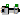 Prismatic | Prismatic joint (1 translational degree-of-freedom, 2 potential states, optional axis flange) |
| 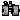 Revolute | Revolute joint (1 rotational degree-of-freedom, 2 potential states, optional axis flange) |
| 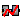 RevolutePlanarLoopConstraint | Revolute joint that is described by 2 positional constraints for usage in a planar loop (the ambiguous cut-force perpendicular to the loop and the ambiguous cut-torques are set arbitrarily to zero) |
| 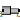 Cylindrical | Cylindrical joint (2 degrees-of-freedom, 4 potential states) |
| 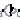 Universal | Universal joint (2 degrees-of-freedom, 4 potential states) |
| 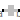 Planar | Planar joint (3 degrees-of-freedom, 6 potential states) |
| 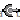 Spherical | Spherical joint (3 constraints and no potential states, or 3 degrees-of-freedom and 3 states) |
| 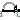 FreeMotion | Free motion joint (6 degrees-of-freedom, 12 potential states) |
| FreeMotionScalarInit | Free motion joint with scalar initialization and state selection (6 degrees-of-freedom, 12 potential states) |
| 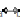 SphericalSpherical | Spherical - spherical joint aggregation (1 constraint, no potential states) with an optional point mass in the middle |
| 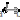 UniversalSpherical | Universal - spherical joint aggregation (1 constraint, no potential states) |
| 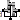 GearConstraint | Ideal 3-dim. gearbox (arbitrary shaft directions) |
| Joint (no mass, no inertia) that describes an ideal rolling wheel (rolling on the plane z=0) | |
| RollingWheelSet | Joint (no mass, no inertia) that describes an ideal rolling wheel set (two ideal rolling wheels connected together by an axis) |
| Joint aggregations for analytic loop handling | |
| Components used for analytic solution of kinematic loops (use only if you know what you are doing) |
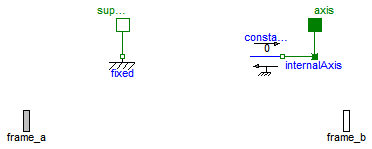
Joint where frame_b is translated along axis n which is fixed in frame_a. The two frames coincide when the relative distance "s = 0".
Optionally, two additional 1-dimensional mechanical flanges (flange "axis" represents the driving flange and flange "support" represents the bearing) can be enabled via parameter useAxisFlange. The enabled axis flange can be driven with elements of the Modelica.Mechanics.Translational library.
In the "Advanced" menu it can be defined via parameter stateSelect that the relative distance "s" and its derivative shall be definitely used as states by setting stateSelect=StateSelect.always. Default is StateSelect.prefer to use the relative distance and its derivative as preferred states. The states are usually selected automatically. In certain situations, especially when closed kinematic loops are present, it might be slightly more efficient, when using the StateSelect.always setting.
In the following figure the animation of a prismatic joint is shown. The light blue coordinate system is frame_a and the dark blue coordinate system is frame_b of the joint. The black arrow is parameter vector "n" defining the translation axis (here: n = {1,1,0}).
Extends from Modelica.Mechanics.MultiBody.Interfaces.PartialElementaryJoint (Base model for elementary joints (has two frames + outer world + assert to guarantee that the joint is connected)).
| Type | Name | Default | Description |
|---|---|---|---|
| Boolean | useAxisFlange | false | = true, if axis flange is enabled |
| Boolean | animation | true | = true, if animation shall be enabled |
| Axis | n | {1,0,0} | Axis of translation resolved in frame_a (= same as in frame_b) [1] |
| Animation | |||
| if animation = true | |||
| Axis | boxWidthDirection | {0,1,0} | Vector in width direction of box, resolved in frame_a [1] |
| Distance | boxWidth | world.defaultJointWidth | Width of prismatic joint box [m] |
| Distance | boxHeight | boxWidth | Height of prismatic joint box [m] |
| Color | boxColor | Modelica.Mechanics.MultiBody... | Color of prismatic joint box |
| SpecularCoefficient | specularCoefficient | world.defaultSpecularCoeffic... | Reflection of ambient light (= 0: light is completely absorbed) |
| Advanced | |||
| StateSelect | stateSelect | StateSelect.prefer | Priority to use distance s and v=der(s) as states |
| Type | Name | Description |
|---|---|---|
| Frame_a | frame_a | Coordinate system fixed to the joint with one cut-force and cut-torque |
| Frame_b | frame_b | Coordinate system fixed to the joint with one cut-force and cut-torque |
| Flange_a | axis | 1-dim. translational flange that drives the joint |
| Flange_b | support | 1-dim. translational flange of the drive drive support (assumed to be fixed in the world frame, NOT in the joint) |
model Prismatic "Prismatic joint (1 translational degree-of-freedom, 2 potential states, optional axis flange)" import SI = Modelica.SIunits; extends Modelica.Mechanics.MultiBody.Interfaces.PartialElementaryJoint;Modelica.Mechanics.Translational.Interfaces.Flange_a axis if useAxisFlange "1-dim. translational flange that drives the joint"; Modelica.Mechanics.Translational.Interfaces.Flange_b support if useAxisFlange "1-dim. translational flange of the drive drive support (assumed to be fixed in the world frame, NOT in the joint)"; parameter Boolean useAxisFlange=false "= true, if axis flange is enabled"; parameter Boolean animation=true "= true, if animation shall be enabled"; parameter Modelica.Mechanics.MultiBody.Types.Axis n={1,0,0} "Axis of translation resolved in frame_a (= same as in frame_b)"; constant SI.Position s_offset=0 "Relative distance offset (distance between frame_a and frame_b = s_offset + s)"; parameter Types.Axis boxWidthDirection={0,1,0} "Vector in width direction of box, resolved in frame_a"; parameter SI.Distance boxWidth=world.defaultJointWidth "Width of prismatic joint box"; parameter SI.Distance boxHeight=boxWidth "Height of prismatic joint box"; input Types.Color boxColor=Modelica.Mechanics.MultiBody.Types.Defaults.JointColor "Color of prismatic joint box"; input Types.SpecularCoefficient specularCoefficient = world.defaultSpecularCoefficient "Reflection of ambient light (= 0: light is completely absorbed)"; parameter StateSelect stateSelect=StateSelect.prefer "Priority to use distance s and v=der(s) as states"; final parameter Real e[3](each final unit="1")= Modelica.Math.Vectors.normalize(n,0.0) "Unit vector in direction of prismatic axis n"; SI.Position s(start=0, final stateSelect=stateSelect) "Relative distance between frame_a and frame_b"; SI.Velocity v(start=0,final stateSelect=stateSelect) "First derivative of s (relative velocity)"; SI.Acceleration a(start=0) "Second derivative of s (relative acceleration)"; SI.Force f "Actuation force in direction of joint axis"; protected Visualizers.Advanced.Shape box( shapeType="box", color=boxColor, specularCoefficient=specularCoefficient, length=if noEvent(abs(s + s_offset) > 1.e-6) then s + s_offset else 1.e-6, width=boxWidth, height=boxHeight, lengthDirection=e, widthDirection=boxWidthDirection, r=frame_a.r_0, R=frame_a.R) if world.enableAnimation and animation;Translational.Components.Fixed fixed; Translational.Interfaces.InternalSupport internalAxis(f = f); Translational.Sources.ConstantForce constantForce(f_constant=0) if not useAxisFlange; equation v = der(s); a = der(v); // relationships between kinematic quantities of frame_a and of frame_b frame_b.r_0 = frame_a.r_0 + Frames.resolve1(frame_a.R, e*(s_offset + s)); frame_b.R = frame_a.R; // Force and torque balance zeros(3) = frame_a.f + frame_b.f; zeros(3) = frame_a.t + frame_b.t + cross(e*(s_offset + s), frame_b.f); // d'Alemberts principle f = -e*frame_b.f; // Connection to internal connectors s = internalAxis.s;connect(fixed.flange, support); connect(internalAxis.flange, axis); connect(constantForce.flange, internalAxis.flange); end Prismatic;
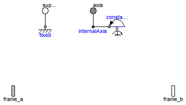
Joint where frame_b rotates around axis n which is fixed in frame_a. The two frames coincide when the rotation angle "phi = 0".
Optionally, two additional 1-dimensional mechanical flanges (flange "axis" represents the driving flange and flange "support" represents the bearing) can be enabled via parameter useAxisFlange. The enabled axis flange can be driven with elements of the Modelica.Mechanics.Rotational library.
In the "Advanced" menu it can be defined via parameter stateSelect that the rotation angle "phi" and its derivative shall be definitely used as states by setting stateSelect=StateSelect.always. Default is StateSelect.prefer to use the joint angle and its derivative as preferred states. The states are usually selected automatically. In certain situations, especially when closed kinematic loops are present, it might be slightly more efficient, when using the StateSelect.always setting.
If a planar loop is present, e.g., consisting of 4 revolute joints where the joint axes are all parallel to each other, then there is no longer a unique mathematical solution and the symbolic algorithms will fail. Usually, an error message will be printed pointing out this situation. In this case, one revolute joint of the loop has to be replaced by a Joints.RevolutePlanarLoopConstraint joint. The effect is that from the 5 constraints of a usual revolute joint, 3 constraints are removed and replaced by appropriate known variables (e.g., the force in the direction of the axis of rotation is treated as known with value equal to zero; for standard revolute joints, this force is an unknown quantity).
In the following figure the animation of a revolute joint is shown. The light blue coordinate system is frame_a and the dark blue coordinate system is frame_b of the joint. The black arrow is parameter vector "n" defining the translation axis (here: n = {0,0,1}, phi.start = 45o).
| Type | Name | Default | Description |
|---|---|---|---|
| Boolean | useAxisFlange | false | = true, if axis flange is enabled |
| Boolean | animation | true | = true, if animation shall be enabled (show axis as cylinder) |
| Axis | n | {0,0,1} | Axis of rotation resolved in frame_a (= same as in frame_b) [1] |
| Animation | |||
| if animation = true | |||
| Distance | cylinderLength | world.defaultJointLength | Length of cylinder representing the joint axis [m] |
| Distance | cylinderDiameter | world.defaultJointWidth | Diameter of cylinder representing the joint axis [m] |
| Color | cylinderColor | Modelica.Mechanics.MultiBody... | Color of cylinder representing the joint axis |
| SpecularCoefficient | specularCoefficient | world.defaultSpecularCoeffic... | Reflection of ambient light (= 0: light is completely absorbed) |
| Advanced | |||
| StateSelect | stateSelect | StateSelect.prefer | Priority to use joint angle phi and w=der(phi) as states |
| Type | Name | Description |
|---|---|---|
| Flange_a | axis | 1-dim. rotational flange that drives the joint |
| Flange_b | support | 1-dim. rotational flange of the drive support (assumed to be fixed in the world frame, NOT in the joint) |
| Frame_a | frame_a | Coordinate system fixed to the joint with one cut-force and cut-torque |
| Frame_b | frame_b | Coordinate system fixed to the joint with one cut-force and cut-torque |
model Revolute "Revolute joint (1 rotational degree-of-freedom, 2 potential states, optional axis flange)" import SI = Modelica.SIunits;Modelica.Mechanics.Rotational.Interfaces.Flange_a axis if useAxisFlange "1-dim. rotational flange that drives the joint"; Modelica.Mechanics.Rotational.Interfaces.Flange_b support if useAxisFlange "1-dim. rotational flange of the drive support (assumed to be fixed in the world frame, NOT in the joint)"; Modelica.Mechanics.MultiBody.Interfaces.Frame_a frame_a "Coordinate system fixed to the joint with one cut-force and cut-torque"; Modelica.Mechanics.MultiBody.Interfaces.Frame_b frame_b "Coordinate system fixed to the joint with one cut-force and cut-torque"; parameter Boolean useAxisFlange=false "= true, if axis flange is enabled"; parameter Boolean animation=true "= true, if animation shall be enabled (show axis as cylinder)"; parameter Modelica.Mechanics.MultiBody.Types.Axis n={0,0,1} "Axis of rotation resolved in frame_a (= same as in frame_b)"; constant SI.Angle phi_offset=0 "Relative angle offset (angle = phi_offset + phi)"; parameter SI.Distance cylinderLength=world.defaultJointLength "Length of cylinder representing the joint axis"; parameter SI.Distance cylinderDiameter=world.defaultJointWidth "Diameter of cylinder representing the joint axis"; input Modelica.Mechanics.MultiBody.Types.Color cylinderColor=Modelica.Mechanics.MultiBody.Types.Defaults.JointColor "Color of cylinder representing the joint axis"; input Modelica.Mechanics.MultiBody.Types.SpecularCoefficient specularCoefficient = world.defaultSpecularCoefficient "Reflection of ambient light (= 0: light is completely absorbed)"; parameter StateSelect stateSelect=StateSelect.prefer "Priority to use joint angle phi and w=der(phi) as states"; SI.Angle phi(start=0, final stateSelect=stateSelect) "Relative rotation angle from frame_a to frame_b"; SI.AngularVelocity w(start=0, stateSelect=stateSelect) "First derivative of angle phi (relative angular velocity)"; SI.AngularAcceleration a(start=0) "Second derivative of angle phi (relative angular acceleration)"; SI.Torque tau "Driving torque in direction of axis of rotation"; SI.Angle angle "= phi_offset + phi"; protected outer Modelica.Mechanics.MultiBody.World world; parameter Real e[3](each final unit="1")=Modelica.Math.Vectors.normalize( n,0.0) "Unit vector in direction of rotation axis, resolved in frame_a (= same as in frame_b)"; Frames.Orientation R_rel "Relative orientation object from frame_a to frame_b or from frame_b to frame_a"; Visualizers.Advanced.Shape cylinder( shapeType="cylinder", color=cylinderColor, specularCoefficient=specularCoefficient, length=cylinderLength, width=cylinderDiameter, height=cylinderDiameter, lengthDirection=e, widthDirection={0,1,0}, r_shape=-e*(cylinderLength/2), r=frame_a.r_0, R=frame_a.R) if world.enableAnimation and animation;protected Modelica.Mechanics.Rotational.Components.Fixed fixed "support flange is fixed to ground"; Rotational.Interfaces.InternalSupport internalAxis(tau=tau); Rotational.Sources.ConstantTorque constantTorque(tau_constant=0) if not useAxisFlange; equation Connections.branch(frame_a.R, frame_b.R); assert(cardinality(frame_a) > 0, "Connector frame_a of revolute joint is not connected"); assert(cardinality(frame_b) > 0, "Connector frame_b of revolute joint is not connected"); angle = phi_offset + phi; w = der(phi); a = der(w); // relationships between quantities of frame_a and of frame_b frame_b.r_0 = frame_a.r_0; if rooted(frame_a.R) then R_rel = Frames.planarRotation(e, phi_offset + phi, w); frame_b.R = Frames.absoluteRotation(frame_a.R, R_rel); frame_a.f = -Frames.resolve1(R_rel, frame_b.f); frame_a.t = -Frames.resolve1(R_rel, frame_b.t); else R_rel = Frames.planarRotation(-e, phi_offset + phi, w); frame_a.R = Frames.absoluteRotation(frame_b.R, R_rel); frame_b.f = -Frames.resolve1(R_rel, frame_a.f); frame_b.t = -Frames.resolve1(R_rel, frame_a.t); end if; // d'Alemberts principle tau = -frame_b.t*e; // Connection to internal connectors phi = internalAxis.phi;connect(fixed.flange, support); connect(internalAxis.flange, axis); connect(constantTorque.flange, internalAxis.flange); end Revolute;
 Modelica.Mechanics.MultiBody.Joints.RevolutePlanarLoopConstraint
Modelica.Mechanics.MultiBody.Joints.RevolutePlanarLoopConstraint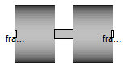
Joint where frame_b rotates around axis n which is fixed in frame_a and where this joint is used in a planar loop providing 2 constraint equations on position level.
If a planar loop is present, e.g., consisting of 4 revolute joints where the joint axes are all parallel to each other, then there is no unique mathematical solution if all revolute joints are modelled with Joints.Revolute and the symbolic algorithms will fail. The reason is that, e.g., the cut-forces in the revolute joints perpendicular to the planar loop are not uniquely defined when 3-dim. descriptions of revolute joints are used. Usually, an error message will be printed pointing out this situation. In this case, one revolute joint in the loop has to be replaced by model Joints.RevolutePlanarLoopCutJoint. The effect is that from the 5 constraints of a 3-dim. revolute joint, 3 constraints are removed and replaced by appropriate known variables (e.g., the force in the direction of the axis of rotation is treated as known with value equal to zero; for standard revolute joints, this force is an unknown quantity).
| Type | Name | Default | Description |
|---|---|---|---|
| Boolean | animation | true | = true, if animation shall be enabled (show axis as cylinder) |
| Axis | n | {0,0,1} | Axis of rotation resolved in frame_a (= same as in frame_b) [1] |
| if animation = true | |||
| Distance | cylinderLength | world.defaultJointLength | Length of cylinder representing the joint axis [m] |
| Distance | cylinderDiameter | world.defaultJointWidth | Diameter of cylinder representing the joint axis [m] |
| Color | cylinderColor | Modelica.Mechanics.MultiBody... | Color of cylinder representing the joint axis |
| SpecularCoefficient | specularCoefficient | world.defaultSpecularCoeffic... | Reflection of ambient light (= 0: light is completely absorbed) |
| Type | Name | Description |
|---|---|---|
| Frame_a | frame_a | Coordinate system fixed to the joint with one cut-force and cut-torque |
| Frame_b | frame_b | Coordinate system fixed to the joint with one cut-force and cut-torque |
model RevolutePlanarLoopConstraint "Revolute joint that is described by 2 positional constraints for usage in a planar loop (the ambiguous cut-force perpendicular to the loop and the ambiguous cut-torques are set arbitrarily to zero)" import SI = Modelica.SIunits; import Cv = Modelica.SIunits.Conversions; import T = Modelica.Mechanics.MultiBody.Frames.TransformationMatrices; import Modelica.Mechanics.MultiBody.Types;Interfaces.Frame_a frame_a "Coordinate system fixed to the joint with one cut-force and cut-torque"; Interfaces.Frame_b frame_b "Coordinate system fixed to the joint with one cut-force and cut-torque"; parameter Boolean animation=true "= true, if animation shall be enabled (show axis as cylinder)"; parameter Modelica.Mechanics.MultiBody.Types.Axis n={0,0,1} "Axis of rotation resolved in frame_a (= same as in frame_b)"; parameter SI.Distance cylinderLength=world.defaultJointLength "Length of cylinder representing the joint axis"; parameter SI.Distance cylinderDiameter=world.defaultJointWidth "Diameter of cylinder representing the joint axis"; input Types.Color cylinderColor=Modelica.Mechanics.MultiBody.Types.Defaults.JointColor "Color of cylinder representing the joint axis"; input Types.SpecularCoefficient specularCoefficient = world.defaultSpecularCoefficient "Reflection of ambient light (= 0: light is completely absorbed)"; protected outer Modelica.Mechanics.MultiBody.World world; parameter Real e[3](each final unit="1")=Modelica.Math.Vectors.normalize( n,0.0) "Unit vector in direction of rotation axis, resolved in frame_a (= same as in frame_b)"; parameter Real nnx_a[3](each final unit="1")=if abs(e[1]) > 0.1 then {0,1,0} else (if abs(e[2]) > 0.1 then {0,0,1} else {1,0,0}) "Arbitrary vector that is not aligned with rotation axis n"; parameter Real ey_a[3](each final unit="1")=Modelica.Math.Vectors.normalize( cross(e, nnx_a),0.0) "Unit vector orthogonal to axis n of revolute joint, resolved in frame_a"; parameter Real ex_a[3](each final unit="1")=cross(ey_a, e) "Unit vector orthogonal to axis n of revolute joint and to ey_a, resolved in frame_a"; Real ey_b[3](each final unit="1") "ey_a, resolved in frame_b"; Real ex_b[3](each final unit="1") "ex_a, resolved in frame_b"; Frames.Orientation R_rel "Dummy or relative orientation object from frame_a to frame_b"; Modelica.SIunits.Position r_rel_a[3] "Position vector from origin of frame_a to origin of frame_b, resolved in frame_a"; SI.Force f_c[2] "Dummy or constraint forces in direction of ex_a, ey_a"; Visualizers.Advanced.Shape cylinder( shapeType="cylinder", color=cylinderColor, specularCoefficient=specularCoefficient, length=cylinderLength, width=cylinderDiameter, height=cylinderDiameter, lengthDirection=e, widthDirection={0,1,0}, r_shape=-e*(cylinderLength/2), r=frame_a.r_0, R=frame_a.R) if world.enableAnimation and animation; equation assert(cardinality(frame_a) > 0, "Connector frame_a of revolute joint is not connected"); assert(cardinality(frame_b) > 0, "Connector frame_b of revolute joint is not connected"); // Determine relative position vector resolved in frame_a R_rel = Frames.relativeRotation(frame_a.R, frame_b.R); r_rel_a = Frames.resolve2(frame_a.R, frame_b.r_0 - frame_a.r_0); // r_rel_a = T.resolve1(R_rel.T, T.resolve2(frame_b.R.T, frame_b.r_0 - frame_a.r_0)); // Constraint equations 0 = ex_a*r_rel_a; 0 = ey_a*r_rel_a; /* Transform forces and torques (the torques are assumed to be zero by the assumption of a planar joint) */ frame_a.t = zeros(3); frame_b.t = zeros(3); frame_a.f = [ex_a, ey_a]*f_c; frame_b.f = -Frames.resolve2(R_rel, frame_a.f); // check that revolute joint is used in planar loop ex_b = Frames.resolve2(R_rel, ex_a); ey_b = Frames.resolve2(R_rel, ey_a); assert(noEvent(abs(e*r_rel_a) <= 1.e-10 and abs(e*ex_b) <= 1.e-10 and abs(e*ey_b) <= 1.e-10), " The MultiBody.Joints.RevolutePlanarLoopConstraint joint is used as cut-joint of a planar loop. However, the revolute joint is not part of a planar loop where the axis of the revolute joint (parameter n) is orthogonal to the possible movements. Either use instead joint MultiBody.Joints.Revolute or correct the definition of the axes vectors n in the revolute joints of the planar loop. ");end RevolutePlanarLoopConstraint;
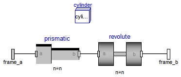
Joint where frame_b rotates around and translates along axis n which is fixed in frame_a. The two frames coincide when "phi=revolute.phi=0" and "s=prismatic.s=0". This joint has the following potential states;
They are used as candidates for automatic selection of states from the tool. This may be enforced by setting "stateSelect=StateSelect.always" in the Advanced menu. The states are usually selected automatically. In certain situations, especially when closed kinematic loops are present, it might be slightly more efficient, when using the "StateSelect.always" setting.
In the following figure the animation of a cylindrical joint is shown. The light blue coordinate system is frame_a and the dark blue coordinate system is frame_b of the joint. The black arrow is parameter vector "n" defining the cylinder axis (here: n = {0,0,1}).
Extends from Modelica.Mechanics.MultiBody.Interfaces.PartialTwoFrames (Base model for components providing two frame connectors + outer world + assert to guarantee that the component is connected).
| Type | Name | Default | Description |
|---|---|---|---|
| Boolean | animation | true | = true, if animation shall be enabled (show cylinder) |
| Axis | n | {1,0,0} | Cylinder axis resolved in frame_a (= same as in frame_b) [1] |
| Animation | |||
| if animation = true | |||
| Distance | cylinderDiameter | world.defaultJointWidth | Diameter of cylinder [m] |
| Color | cylinderColor | Modelica.Mechanics.MultiBody... | Color of cylinder |
| SpecularCoefficient | specularCoefficient | world.defaultSpecularCoeffic... | Reflection of ambient light (= 0: light is completely absorbed) |
| Advanced | |||
| StateSelect | stateSelect | StateSelect.prefer | Priority to use joint coordinates (phi, s, w, v) as states |
| Type | Name | Description |
|---|---|---|
| Frame_a | frame_a | Coordinate system fixed to the component with one cut-force and cut-torque |
| Frame_b | frame_b | Coordinate system fixed to the component with one cut-force and cut-torque |
model Cylindrical
"Cylindrical joint (2 degrees-of-freedom, 4 potential states)"
import SI = Modelica.SIunits;
extends Modelica.Mechanics.MultiBody.Interfaces.PartialTwoFrames;
parameter Boolean animation=true
"= true, if animation shall be enabled (show cylinder)";
parameter Modelica.Mechanics.MultiBody.Types.Axis n={1,0,0}
"Cylinder axis resolved in frame_a (= same as in frame_b)";
parameter SI.Distance cylinderDiameter=world.defaultJointWidth
"Diameter of cylinder";
input Types.Color cylinderColor=Modelica.Mechanics.MultiBody.Types.Defaults.JointColor
"Color of cylinder";
input Types.SpecularCoefficient specularCoefficient = world.defaultSpecularCoefficient
"Reflection of ambient light (= 0: light is completely absorbed)";
parameter StateSelect stateSelect=StateSelect.prefer
"Priority to use joint coordinates (phi, s, w, v) as states";
Prismatic prismatic(
n=n,
animation=false,
stateSelect=StateSelect.never);
Revolute revolute(
n=n,
animation=false,
stateSelect=StateSelect.never);
SI.Position s(start=0, stateSelect=stateSelect)
"Relative distance between frame_a and frame_b";
SI.Angle phi(start=0, stateSelect=stateSelect)
"Relative rotation angle from frame_a to frame_b";
SI.Velocity v(start=0, stateSelect=stateSelect)
"First derivative of s (relative velocity)";
SI.AngularVelocity w(start=0, stateSelect=stateSelect)
"First derivative of angle phi (relative angular velocity)";
SI.Acceleration a(start=0) "Second derivative of s (relative acceleration)";
SI.AngularAcceleration wd(start=0)
"Second derivative of angle phi (relative angular acceleration)";
protected
Visualizers.Advanced.Shape cylinder(
shapeType="cylinder",
color=cylinderColor,
specularCoefficient=specularCoefficient,
length=prismatic.s,
width=cylinderDiameter,
height=cylinderDiameter,
lengthDirection=prismatic.n,
widthDirection={0,1,0},
r=frame_a.r_0,
R=frame_a.R) if world.enableAnimation and animation;
equation
phi = revolute.phi;
w = der(phi);
wd = der(w);
s = prismatic.s;
v = der(s);
a = der(v);
connect(frame_a, prismatic.frame_a);
connect(prismatic.frame_b, revolute.frame_a);
connect(revolute.frame_b, frame_b);
end Cylindrical;
 Modelica.Mechanics.MultiBody.Joints.Universal
Modelica.Mechanics.MultiBody.Joints.Universal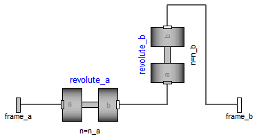
Joint where frame_a rotates around axis n_a which is fixed in frame_a and frame_b rotates around axis n_b which is fixed in frame_b. The two frames coincide when "revolute_a.phi=0" and "revolute_b.phi=0". This joint has the following potential states;
They are used as candidates for automatic selection of states from the tool. This may be enforced by setting "stateSelect=StateSelect.always" in the Advanced menu. The states are usually selected automatically. In certain situations, especially when closed kinematic loops are present, it might be slightly more efficient, when using the "StateSelect.always" setting.
In the following figure the animation of a universal joint is shown. The light blue coordinate system is frame_a and the dark blue coordinate system is frame_b of the joint (here: n_a = {0,0,1}, n_b = {0,1,0}, phi_a.start = 90o, phi_b.start = 45o).
Extends from Modelica.Mechanics.MultiBody.Interfaces.PartialTwoFrames (Base model for components providing two frame connectors + outer world + assert to guarantee that the component is connected).
| Type | Name | Default | Description |
|---|---|---|---|
| Boolean | animation | true | = true, if animation shall be enabled |
| Axis | n_a | {1,0,0} | Axis of revolute joint 1 resolved in frame_a [1] |
| Axis | n_b | {0,1,0} | Axis of revolute joint 2 resolved in frame_b [1] |
| Animation | |||
| if animation = true | |||
| Distance | cylinderLength | world.defaultJointLength | Length of cylinders representing the joint axes [m] |
| Distance | cylinderDiameter | world.defaultJointWidth | Diameter of cylinders representing the joint axes [m] |
| Color | cylinderColor | Modelica.Mechanics.MultiBody... | Color of cylinders representing the joint axes |
| SpecularCoefficient | specularCoefficient | world.defaultSpecularCoeffic... | Reflection of ambient light (= 0: light is completely absorbed) |
| Advanced | |||
| StateSelect | stateSelect | StateSelect.prefer | Priority to use joint coordinates (phi_a, phi_b, w_a, w_b) as states |
| Type | Name | Description |
|---|---|---|
| Frame_a | frame_a | Coordinate system fixed to the component with one cut-force and cut-torque |
| Frame_b | frame_b | Coordinate system fixed to the component with one cut-force and cut-torque |
model Universal
"Universal joint (2 degrees-of-freedom, 4 potential states)"
import SI = Modelica.SIunits;
extends Modelica.Mechanics.MultiBody.Interfaces.PartialTwoFrames;
parameter Boolean animation=true "= true, if animation shall be enabled";
parameter Modelica.Mechanics.MultiBody.Types.Axis n_a={1,0,0}
"Axis of revolute joint 1 resolved in frame_a";
parameter Modelica.Mechanics.MultiBody.Types.Axis n_b={0,1,0}
"Axis of revolute joint 2 resolved in frame_b";
parameter SI.Distance cylinderLength=world.defaultJointLength
"Length of cylinders representing the joint axes";
parameter SI.Distance cylinderDiameter=world.defaultJointWidth
"Diameter of cylinders representing the joint axes";
input Types.Color cylinderColor=Modelica.Mechanics.MultiBody.Types.Defaults.JointColor
"Color of cylinders representing the joint axes";
input Types.SpecularCoefficient specularCoefficient = world.defaultSpecularCoefficient
"Reflection of ambient light (= 0: light is completely absorbed)";
parameter StateSelect stateSelect=StateSelect.prefer
"Priority to use joint coordinates (phi_a, phi_b, w_a, w_b) as states";
Modelica.Mechanics.MultiBody.Joints.Revolute revolute_a(
n=n_a,
stateSelect=StateSelect.never,
cylinderDiameter=cylinderDiameter,
cylinderLength=cylinderLength,
cylinderColor=cylinderColor,
specularCoefficient=specularCoefficient,
animation=animation);
Modelica.Mechanics.MultiBody.Joints.Revolute revolute_b(
n=n_b,
stateSelect=StateSelect.never,
animation=animation,
cylinderDiameter=cylinderDiameter,
cylinderLength=cylinderLength,
cylinderColor=cylinderColor,
specularCoefficient=specularCoefficient);
SI.Angle phi_a(start=0, stateSelect=stateSelect)
"Relative rotation angle from frame_a to intermediate frame";
SI.Angle phi_b(start=0, stateSelect=stateSelect)
"Relative rotation angle from intermediate frame to frame_b";
SI.AngularVelocity w_a(start=0, stateSelect=stateSelect)
"First derivative of angle phi_a (relative angular velocity a)";
SI.AngularVelocity w_b(start=0, stateSelect=stateSelect)
"First derivative of angle phi_b (relative angular velocity b)";
SI.AngularAcceleration a_a(start=0)
"Second derivative of angle phi_a (relative angular acceleration a)";
SI.AngularAcceleration a_b(start=0)
"Second derivative of angle phi_b (relative angular acceleration b)";
equation
phi_a = revolute_a.phi;
phi_b = revolute_b.phi;
w_a = der(phi_a);
w_b = der(phi_b);
a_a = der(w_a);
a_b = der(w_b);
connect(frame_a, revolute_a.frame_a);
connect(revolute_b.frame_b, frame_b);
connect(revolute_a.frame_b, revolute_b.frame_a);
end Universal;
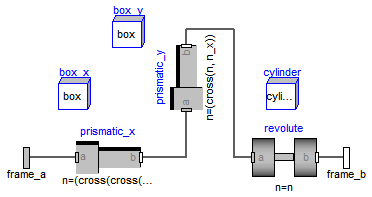
Joint where frame_b can move in a plane and can rotate around an axis orthogonal to the plane. The plane is defined by vector n which is perpendicular to the plane and by vector n_x, which points in the direction of the x-axis of the plane. frame_a and frame_b coincide when s_x=prismatic_x.s=0, s_y=prismatic_y.s=0 and phi=revolute.phi=0. This joint has the following potential states:
They are used as candidates for automatic selection of states from the tool. This may be enforced by setting "stateSelect=StateSelect.always" in the Advanced menu. The states are usually selected automatically. In certain situations, especially when closed kinematic loops are present, it might be slightly more efficient, when using the "StateSelect.always" setting.
In the following figure the animation of a planar joint is shown. The light blue coordinate system is frame_a and the dark blue coordinate system is frame_b of the joint. The black arrows are parameter vectors "n" and "n_x" (here: n = {0,1,0}, n_x = {0,0,1}, s_x.start = 0.5, s_y.start = 0.5, phi.start = 45o).
Extends from Modelica.Mechanics.MultiBody.Interfaces.PartialTwoFrames (Base model for components providing two frame connectors + outer world + assert to guarantee that the component is connected).
| Type | Name | Default | Description |
|---|---|---|---|
| Boolean | animation | true | = true, if animation shall be enabled |
| Axis | n | {0,0,1} | Axis orthogonal to unconstrained plane, resolved in frame_a (= same as in frame_b) [1] |
| Axis | n_x | {1,0,0} | Vector in direction of x-axis of plane, resolved in frame_a (n_x shall be orthogonal to n) [1] |
| Animation | |||
| if animation = true | |||
| Distance | cylinderLength | world.defaultJointLength | Length of revolute cylinder [m] |
| Distance | cylinderDiameter | world.defaultJointWidth | Diameter of revolute cylinder [m] |
| Color | cylinderColor | Modelica.Mechanics.MultiBody... | Color of revolute cylinder |
| Distance | boxWidth | 0.3*cylinderDiameter | Width of prismatic joint boxes [m] |
| Distance | boxHeight | boxWidth | Height of prismatic joint boxes [m] |
| Color | boxColor | Modelica.Mechanics.MultiBody... | Color of prismatic joint boxes |
| Advanced | |||
| StateSelect | stateSelect | StateSelect.prefer | Priority to use joint coordinates (s_x, s_y, phi, v_x, v_y, w) as states |
| Type | Name | Description |
|---|---|---|
| Frame_a | frame_a | Coordinate system fixed to the component with one cut-force and cut-torque |
| Frame_b | frame_b | Coordinate system fixed to the component with one cut-force and cut-torque |
model Planar
"Planar joint (3 degrees-of-freedom, 6 potential states)"
import SI = Modelica.SIunits;
extends Modelica.Mechanics.MultiBody.Interfaces.PartialTwoFrames;
parameter Boolean animation=true "= true, if animation shall be enabled";
parameter Modelica.Mechanics.MultiBody.Types.Axis n={0,0,1}
"Axis orthogonal to unconstrained plane, resolved in frame_a (= same as in frame_b)";
parameter Modelica.Mechanics.MultiBody.Types.Axis n_x={1,0,0}
"Vector in direction of x-axis of plane, resolved in frame_a (n_x shall be orthogonal to n)";
parameter SI.Distance cylinderLength=world.defaultJointLength
"Length of revolute cylinder";
parameter SI.Distance cylinderDiameter=world.defaultJointWidth
"Diameter of revolute cylinder";
input Types.Color cylinderColor=Modelica.Mechanics.MultiBody.Types.Defaults.JointColor
"Color of revolute cylinder";
parameter SI.Distance boxWidth=0.3*cylinderDiameter
"Width of prismatic joint boxes";
parameter SI.Distance boxHeight=boxWidth "Height of prismatic joint boxes";
input Types.Color boxColor=Modelica.Mechanics.MultiBody.Types.Defaults.JointColor
"Color of prismatic joint boxes";
parameter StateSelect stateSelect=StateSelect.prefer
"Priority to use joint coordinates (s_x, s_y, phi, v_x, v_y, w) as states";
Prismatic prismatic_x(
stateSelect=StateSelect.never,
n=(cross(cross(n, n_x), n)),
animation=false);
Prismatic prismatic_y(
stateSelect=StateSelect.never,
n=(cross(n, n_x)),
animation=false);
Revolute revolute(
stateSelect=StateSelect.never,
n=n,
animation=false);
SI.Position s_x(start=0, stateSelect=stateSelect)
"Relative distance along first prismatic joint starting at frame_a";
SI.Position s_y(start=0, stateSelect=stateSelect)
"Relative distance along second prismatic joint starting at first prismatic joint";
SI.Angle phi(start=0, stateSelect=stateSelect)
"Relative rotation angle from frame_a to frame_b";
SI.Velocity v_x(start=0, stateSelect=stateSelect)
"First derivative of s_x (relative velocity in s_x direction)";
SI.Velocity v_y(start=0, stateSelect=stateSelect)
"First derivative of s_y (relative velocity in s_y direction)";
SI.AngularVelocity w(start=0, stateSelect=stateSelect)
"First derivative of angle phi (relative angular velocity)";
SI.Acceleration a_x(start=0)
"Second derivative of s_x (relative acceleration in s_x direction)";
SI.Acceleration a_y(start=0)
"Second derivative of s_y (relative acceleration in s_y direction)";
SI.AngularAcceleration wd(start=0)
"Second derivative of angle phi (relative angular acceleration)";
protected
parameter Integer ndim=if world.enableAnimation and animation then 1 else 0;
parameter Real e[3](each final unit="1")=Modelica.Math.Vectors.normalize(
n);
protected
Visualizers.Advanced.Shape box_x[ndim](
each shapeType="box",
each color=boxColor,
each length=prismatic_x.s,
each width=boxWidth,
each height=boxWidth,
each lengthDirection=prismatic_x.e,
each widthDirection={0,1,0},
each r=frame_a.r_0,
each R=frame_a.R);
Visualizers.Advanced.Shape box_y[ndim](
each shapeType="box",
each color=boxColor,
each length=prismatic_y.s,
each width=boxWidth,
each height=boxWidth,
each lengthDirection=prismatic_y.e,
each widthDirection={1,0,0},
each r=prismatic_y.frame_a.r_0,
each R=prismatic_y.frame_a.R);
Visualizers.Advanced.Shape cylinder[ndim](
each shapeType="cylinder",
each color=cylinderColor,
each length=cylinderLength,
each width=cylinderDiameter,
each height=cylinderDiameter,
each lengthDirection=n,
each widthDirection={0,1,0},
each r_shape=-e*(cylinderLength/2),
each r=revolute.frame_b.r_0,
each R=revolute.frame_b.R);
equation
s_x = prismatic_x.s;
s_y = prismatic_y.s;
phi = revolute.phi;
v_x = der(s_x);
v_y = der(s_y);
w = der(phi);
a_x = der(v_x);
a_y = der(v_y);
wd = der(w);
connect(frame_a, prismatic_x.frame_a);
connect(prismatic_x.frame_b, prismatic_y.frame_a);
connect(prismatic_y.frame_b, revolute.frame_a);
connect(revolute.frame_b, frame_b);
end Planar;
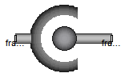
Joint with 3 constraints that define that the origin of frame_a and the origin of frame_b coincide. By default this joint defines only the 3 constraints without any potential states. If parameter enforceStates is set to true in the "Advanced" menu, three states are introduced. Depending on parameter useQuaternions these are either quaternions and the relative angular velocity or 3 angles and the angle derivatves. In the latter case the orientation of frame_b is computed by rotating frame_a along the axes defined in parameter vector "sequence_angleStates" (default = {1,2,3}, i.e., the Cardan angle sequence) around the angles used as states. For example, the default is to rotate the x-axis of frame_a around angles[1], the new y-axis around angles[2] and the new z-axis around angles[3], arriving at frame_b. If angles are used as states there is the slight disadvantage that a singular configuration is present leading to a divison by zero.
If this joint is used in a chain structure, a Modelica translator has to select orientation coordinates of a body as states, if the default setting is used. It is usually better to use relative coordinates in the spherical joint as states, and therefore in this situation parameter enforceStates might be set to true.
If this joint is used in a loop structure, the default setting results in a cut-joint that breaks the loop in independent kinematic pieces, hold together by the constraints of this joint. As a result, a Modelica translator will first try to select 3 generalized coordinates in the joints of the remaining parts of the loop and their first derivative as states and if this is not possible, e.g., because there are only spherical joints in the loop, will select coordinates from a body of the loop as states.
In the following figure the animation of a spherical joint is shown. The light blue coordinate system is frame_a and the dark blue coordinate system is frame_b of the joint. (here: angles_start = {45, 45, 45}o).
Extends from Modelica.Mechanics.MultiBody.Interfaces.PartialTwoFrames (Base model for components providing two frame connectors + outer world + assert to guarantee that the component is connected).
| Type | Name | Default | Description |
|---|---|---|---|
| Boolean | animation | true | = true, if animation shall be enabled (show sphere) |
| if animation = true | |||
| Distance | sphereDiameter | world.defaultJointLength | Diameter of sphere representing the spherical joint [m] |
| Color | sphereColor | Modelica.Mechanics.MultiBody... | Color of sphere representing the spherical joint |
| SpecularCoefficient | specularCoefficient | world.defaultSpecularCoeffic... | Reflection of ambient light (= 0: light is completely absorbed) |
| Initialization | |||
| Boolean | angles_fixed | false | = true, if angles_start are used as initial values, else as guess values |
| Angle | angles_start[3] | {0,0,0} | Initial values of angles to rotate frame_a around 'sequence_start' axes into frame_b [rad] |
| RotationSequence | sequence_start | {1,2,3} | Sequence of rotations to rotate frame_a into frame_b at initial time |
| Boolean | w_rel_a_fixed | false | = true, if w_rel_a_start are used as initial values, else as guess values |
| AngularVelocity | w_rel_a_start[3] | {0,0,0} | Initial values of angular velocity of frame_b with respect to frame_a, resolved in frame_a [rad/s] |
| Boolean | z_rel_a_fixed | false | = true, if z_rel_a_start are used as initial values, else as guess values |
| AngularAcceleration | z_rel_a_start[3] | {0,0,0} | Initial values of angular acceleration z_rel_a = der(w_rel_a) [rad/s2] |
| Advanced | |||
| Boolean | enforceStates | false | = true, if relative variables of spherical joint shall be used as states (StateSelect.always) |
| Boolean | useQuaternions | true | = true, if quaternions shall be used as states otherwise use 3 angles as states (provided enforceStates=true) |
| RotationSequence | sequence_angleStates | {1,2,3} | Sequence of rotations to rotate frame_a into frame_b around the 3 angles used as states |
| Type | Name | Description |
|---|---|---|
| Frame_a | frame_a | Coordinate system fixed to the component with one cut-force and cut-torque |
| Frame_b | frame_b | Coordinate system fixed to the component with one cut-force and cut-torque |
model Spherical
"Spherical joint (3 constraints and no potential states, or 3 degrees-of-freedom and 3 states)"
import Modelica.Mechanics.MultiBody.Frames;
import SI = Modelica.SIunits;
extends Modelica.Mechanics.MultiBody.Interfaces.PartialTwoFrames;
parameter Boolean animation=true
"= true, if animation shall be enabled (show sphere)";
parameter SI.Distance sphereDiameter=world.defaultJointLength
"Diameter of sphere representing the spherical joint";
input Types.Color sphereColor=Modelica.Mechanics.MultiBody.Types.Defaults.JointColor
"Color of sphere representing the spherical joint";
input Types.SpecularCoefficient specularCoefficient = world.defaultSpecularCoefficient
"Reflection of ambient light (= 0: light is completely absorbed)";
parameter Boolean angles_fixed = false
"= true, if angles_start are used as initial values, else as guess values";
parameter SI.Angle angles_start[3]={0,0,0}
"Initial values of angles to rotate frame_a around 'sequence_start' axes into frame_b";
parameter Types.RotationSequence sequence_start={1,2,3}
"Sequence of rotations to rotate frame_a into frame_b at initial time";
parameter Boolean w_rel_a_fixed = false
"= true, if w_rel_a_start are used as initial values, else as guess values";
parameter SI.AngularVelocity w_rel_a_start[3]={0,0,0}
"Initial values of angular velocity of frame_b with respect to frame_a, resolved in frame_a";
parameter Boolean z_rel_a_fixed = false
"= true, if z_rel_a_start are used as initial values, else as guess values";
parameter SI.AngularAcceleration z_rel_a_start[3]={0,0,0}
"Initial values of angular acceleration z_rel_a = der(w_rel_a)";
parameter Boolean enforceStates=false
" = true, if relative variables of spherical joint shall be used as states (StateSelect.always)";
parameter Boolean useQuaternions=true
" = true, if quaternions shall be used as states otherwise use 3 angles as states (provided enforceStates=true)";
parameter Types.RotationSequence sequence_angleStates={1,2,3}
" Sequence of rotations to rotate frame_a into frame_b around the 3 angles used as states";
final parameter Frames.Orientation R_rel_start=
Frames.axesRotations(sequence_start, angles_start, zeros(3))
"Orientation object from frame_a to frame_b at initial time";
protected
Visualizers.Advanced.Shape sphere(
shapeType="sphere",
color=sphereColor,
specularCoefficient=specularCoefficient,
length=sphereDiameter,
width=sphereDiameter,
height=sphereDiameter,
lengthDirection={1,0,0},
widthDirection={0,1,0},
r_shape={-0.5,0,0}*sphereDiameter,
r=frame_a.r_0,
R=frame_a.R) if world.enableAnimation and animation;
// Declarations for quaternions (dummies, if quaternions are not used)
parameter Frames.Quaternions.Orientation Q_start=
Modelica.Mechanics.MultiBody.Frames.to_Q(R_rel_start)
"Quaternion orientation object from frame_a to frame_b at initial time";
Frames.Quaternions.Orientation Q(start=Q_start, each stateSelect=if
enforceStates and useQuaternions then StateSelect.prefer else
StateSelect.never)
"Quaternion orientation object from frame_a to frame_b (dummy value, if quaternions are not used as states)";
// Declaration for 3 angles
parameter SI.Angle phi_start[3]=if sequence_start[1] ==
sequence_angleStates[1] and sequence_start[2] == sequence_angleStates[2]
and sequence_start[3] == sequence_angleStates[3] then angles_start else
Frames.axesRotationsAngles(R_rel_start, sequence_angleStates)
"Potential angle states at initial time";
SI.Angle phi[3](start=phi_start, each stateSelect=if enforceStates and not
useQuaternions then StateSelect.always else StateSelect.never)
"Dummy or 3 angles to rotate frame_a into frame_b";
SI.AngularVelocity phi_d[3](each stateSelect=if enforceStates and not
useQuaternions then StateSelect.always else StateSelect.never)
"= der(phi)";
SI.AngularAcceleration phi_dd[3] "= der(phi_d)";
// Other declarations
SI.AngularVelocity w_rel[3](start=Frames.resolve2(R_rel_start, w_rel_a_start),
fixed = fill(w_rel_a_fixed,3), each stateSelect=if
enforceStates and useQuaternions then StateSelect.always else
StateSelect.never)
"Dummy or relative angular velocity of frame_b with respect to frame_a, resolved in frame_b";
Frames.Orientation R_rel
"Dummy or relative orientation object to rotate from frame_a to frame_b";
Frames.Orientation R_rel_inv
"Dummy or relative orientation object to rotate from frame_b to frame_a";
initial equation
if angles_fixed then
if not enforceStates then
// no states defined in spherical object
zeros(3) = Frames.Orientation.equalityConstraint(Frames.absoluteRotation(frame_a.R,R_rel_start),frame_b.R);
elseif useQuaternions then
// Quaternions Q are used as states
zeros(3) = Frames.Quaternions.Orientation.equalityConstraint(Q, Q_start);
else
// The 3 angles 'phi' are used as states
phi = phi_start;
end if;
end if;
if z_rel_a_fixed then
// Initialize acceleration variables
der(w_rel) = Frames.resolve2(R_rel_start, z_rel_a_start);
end if;
equation
// torque balance
zeros(3) = frame_a.t;
zeros(3) = frame_b.t;
if enforceStates then
Connections.branch(frame_a.R, frame_b.R);
frame_b.r_0 = frame_a.r_0;
if rooted(frame_a.R) then
R_rel_inv = Frames.nullRotation();
frame_b.R = Frames.absoluteRotation(frame_a.R, R_rel);
zeros(3) = frame_a.f + Frames.resolve1(R_rel, frame_b.f);
else
R_rel_inv = Frames.inverseRotation(R_rel);
frame_a.R = Frames.absoluteRotation(frame_b.R, R_rel_inv);
zeros(3) = frame_b.f + Frames.resolve2(R_rel, frame_a.f);
end if;
// Compute relative orientation object
if useQuaternions then
// Use Quaternions as states (with dynamic state selection)
{0} = Frames.Quaternions.orientationConstraint(Q);
w_rel = Frames.Quaternions.angularVelocity2(Q, der(Q));
R_rel = Frames.from_Q(Q, w_rel);
// Dummies
phi = zeros(3);
phi_d = zeros(3);
phi_dd = zeros(3);
else
// Use angles as states
phi_d = der(phi);
phi_dd = der(phi_d);
R_rel = Frames.axesRotations(sequence_angleStates, phi, phi_d);
w_rel = Frames.angularVelocity2(R_rel);
// Dummies
Q = zeros(4);
end if;
else
// Spherical joint does not have states
frame_b.r_0 = frame_a.r_0;
//frame_b.r_0 = transpose(frame_b.R.T)*(frame_b.R.T*(transpose(frame_a.R.T)*(frame_a.R.T*frame_a.r_0)));
zeros(3) = frame_a.f + Frames.resolveRelative(frame_b.f, frame_b.R, frame_a.R);
if w_rel_a_fixed or z_rel_a_fixed then
w_rel = Frames.angularVelocity2(frame_b.R) - Frames.resolve2(frame_b.R,
Frames.angularVelocity1(frame_a.R));
else
w_rel = zeros(3);
end if;
// Dummies
R_rel = Frames.nullRotation();
R_rel_inv = Frames.nullRotation();
Q = zeros(4);
phi = zeros(3);
phi_d = zeros(3);
phi_dd = zeros(3);
end if;
end Spherical;
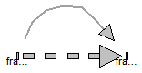
Joint which does not constrain the motion between frame_a and frame_b. Such a joint is only meaningful if the relative distance and orientation between frame_a and frame_b, and their derivatives, shall be used as states.
Note, that bodies such as Parts.Body, Parts.BodyShape, have potential states describing the distance and orientation, and their derivatives, between the world frame and a body fixed frame. Therefore, if these potential state variables are suited, a FreeMotion joint is not needed.
The states of the FreeMotion object are:The quaternions have the slight disadvantage that there is a non-linear constraint equation between the 4 quaternions. Therefore, at least one non-linear equation has to be solved during simulation. A tool might, however, analytically solve this simple constraint equation. Using the 3 angles as states has the disadvantage that there is a singular configuration in which a division by zero will occur. If it is possible to determine in advance for an application class that this singular configuration is outside of the operating region, the 3 angles might be used as states by setting useQuaternions = false.
In text books about 3-dimensional mechanics often 3 angles and the angular velocity are used as states. This is not the case here, since 3 angles and their derivatives are used as states (if useQuaternions = false). The reason is that for real-time simulation the discretization formula of the integrator might be "inlined" and solved together with the model equations. By appropriate symbolic transformation the performance is drastically increased if angles and their derivatives are used as states, instead of angles and the angular velocity.
If parameter enforceStates is set to true (= the default) in the "Advanced" menu, then FreeMotion variables are forced to be used as states according to the setting of parameters "useQuaternions" and "sequence_angleStates".
In the following figure the animation of a FreeMotion joint is shown. The light blue coordinate system is frame_a and the dark blue coordinate system is frame_b of the joint. (here: r_rel_a_start = {0.5, 0, 0.5}, angles_start = {45, 45, 45}o).
Extends from Modelica.Mechanics.MultiBody.Interfaces.PartialTwoFrames (Base model for components providing two frame connectors + outer world + assert to guarantee that the component is connected).
| Type | Name | Default | Description |
|---|---|---|---|
| Boolean | animation | true | = true, if animation shall be enabled (show arrow from frame_a to frame_b) |
| Initialization | |||
| Position | r_rel_a.start[3] | {0,0,0} | Position vector from origin of frame_a to origin of frame_b, resolved in frame_a [m] |
| Velocity | v_rel_a.start[3] | {0,0,0} | = der(r_rel_a), i.e., velocity of origin of frame_b with respect to origin of frame_a, resolved in frame_a [m/s] |
| Acceleration | a_rel_a.start[3] | {0,0,0} | = der(v_rel_a) [m/s2] |
| Boolean | angles_fixed | false | = true, if angles_start are used as initial values, else as guess values |
| Angle | angles_start[3] | {0,0,0} | Initial values of angles to rotate frame_a around 'sequence_start' axes into frame_b [rad] |
| RotationSequence | sequence_start | {1,2,3} | Sequence of rotations to rotate frame_a into frame_b at initial time |
| Boolean | w_rel_a_fixed | false | = true, if w_rel_a_start are used as initial values, else as guess values |
| AngularVelocity | w_rel_a_start[3] | {0,0,0} | Initial values of angular velocity of frame_b with respect to frame_a, resolved in frame_a [rad/s] |
| Boolean | z_rel_a_fixed | false | = true, if z_rel_a_start are used as initial values, else as guess values |
| AngularAcceleration | z_rel_a_start[3] | {0,0,0} | Initial values of angular acceleration z_rel_a = der(w_rel_a) [rad/s2] |
| Animation | |||
| if animation = true | |||
| Length | arrowDiameter | world.defaultArrowDiameter | Diameter of arrow from frame_a to frame_b [m] |
| Color | arrowColor | Modelica.Mechanics.MultiBody... | Color of arrow |
| SpecularCoefficient | specularCoefficient | world.defaultSpecularCoeffic... | Reflection of ambient light (= 0: light is completely absorbed) |
| Advanced | |||
| Boolean | enforceStates | true | = true, if relative variables between frame_a and frame_b shall be used as states |
| Boolean | useQuaternions | true | = true, if quaternions shall be used as states otherwise use 3 angles as states |
| RotationSequence | sequence_angleStates | {1,2,3} | Sequence of rotations to rotate frame_a into frame_b around the 3 angles used as states |
| Type | Name | Description |
|---|---|---|
| Frame_a | frame_a | Coordinate system fixed to the component with one cut-force and cut-torque |
| Frame_b | frame_b | Coordinate system fixed to the component with one cut-force and cut-torque |
model FreeMotion
"Free motion joint (6 degrees-of-freedom, 12 potential states)"
import Modelica.Math.*;
import SI = Modelica.SIunits;
extends Modelica.Mechanics.MultiBody.Interfaces.PartialTwoFrames;
parameter Boolean animation=true
"= true, if animation shall be enabled (show arrow from frame_a to frame_b)";
SI.Position r_rel_a[3](start={0,0,0}, each stateSelect=if enforceStates then
StateSelect.always else StateSelect.prefer)
"Position vector from origin of frame_a to origin of frame_b, resolved in frame_a";
SI.Velocity v_rel_a[3](start={0,0,0}, each stateSelect=if enforceStates then StateSelect.always else
StateSelect.prefer)
"= der(r_rel_a), i.e., velocity of origin of frame_b with respect to origin of frame_a, resolved in frame_a";
SI.Acceleration a_rel_a[3](start={0,0,0}) "= der(v_rel_a)";
parameter Boolean angles_fixed = false
"= true, if angles_start are used as initial values, else as guess values";
parameter SI.Angle angles_start[3]={0,0,0}
"Initial values of angles to rotate frame_a around 'sequence_start' axes into frame_b";
parameter Types.RotationSequence sequence_start={1,2,3}
"Sequence of rotations to rotate frame_a into frame_b at initial time";
parameter Boolean w_rel_a_fixed = false
"= true, if w_rel_a_start are used as initial values, else as guess values";
parameter SI.AngularVelocity w_rel_a_start[3]={0,0,0}
"Initial values of angular velocity of frame_b with respect to frame_a, resolved in frame_a";
parameter Boolean z_rel_a_fixed = false
"= true, if z_rel_a_start are used as initial values, else as guess values";
parameter SI.AngularAcceleration z_rel_a_start[3]={0,0,0}
"Initial values of angular acceleration z_rel_a = der(w_rel_a)";
parameter SI.Length arrowDiameter=world.defaultArrowDiameter
"Diameter of arrow from frame_a to frame_b";
input Types.Color arrowColor=Modelica.Mechanics.MultiBody.Types.Defaults.SensorColor
"Color of arrow";
input Types.SpecularCoefficient specularCoefficient = world.defaultSpecularCoefficient
"Reflection of ambient light (= 0: light is completely absorbed)";
parameter Boolean enforceStates=true
" = true, if relative variables between frame_a and frame_b shall be used as states";
parameter Boolean useQuaternions=true
" = true, if quaternions shall be used as states otherwise use 3 angles as states";
parameter Types.RotationSequence sequence_angleStates={1,2,3}
" Sequence of rotations to rotate frame_a into frame_b around the 3 angles used as states";
final parameter Frames.Orientation R_rel_start=
Modelica.Mechanics.MultiBody.Frames.axesRotations(sequence_start, angles_start,zeros(3))
"Orientation object from frame_a to frame_b at initial time";
protected
Visualizers.Advanced.Arrow arrow(
r_head=r_rel_a,
diameter=arrowDiameter,
color=arrowColor,
specularCoefficient=specularCoefficient,
r=frame_a.r_0,
R=frame_a.R) if world.enableAnimation and animation;
// Declarations for quaternions (dummies, if quaternions are not used)
parameter Frames.Quaternions.Orientation Q_start=Frames.to_Q(R_rel_start)
"Quaternion orientation object from frame_a to frame_b at initial time";
Frames.Quaternions.Orientation Q(start=Q_start, each stateSelect=if
enforceStates then (if useQuaternions then StateSelect.prefer else
StateSelect.never) else StateSelect.default)
"Quaternion orientation object from frame_a to frame_b (dummy value, if quaternions are not used as states)";
// Declaration for 3 angles
parameter SI.Angle phi_start[3]=if sequence_start[1] ==
sequence_angleStates[1] and sequence_start[2] == sequence_angleStates[2]
and sequence_start[3] == sequence_angleStates[3] then angles_start else
Frames.axesRotationsAngles(R_rel_start,
sequence_angleStates) "Potential angle states at initial time";
SI.Angle phi[3](start=phi_start, each stateSelect=if enforceStates then (if
useQuaternions then StateSelect.never else StateSelect.always) else
StateSelect.prefer) "Dummy or 3 angles to rotate frame_a into frame_b";
SI.AngularVelocity phi_d[3](each stateSelect=if enforceStates then (if
useQuaternions then StateSelect.never else StateSelect.always) else
StateSelect.prefer) "= der(phi)";
SI.AngularAcceleration phi_dd[3] "= der(phi_d)";
// Other declarations
SI.AngularVelocity w_rel_b[3](start=Frames.resolve2(R_rel_start, w_rel_a_start),
fixed=fill(w_rel_a_fixed,3),
each stateSelect=if enforceStates then
(if useQuaternions then StateSelect.always else
StateSelect.avoid) else StateSelect.prefer)
"Dummy or relative angular velocity of frame_b with respect to frame_a, resolved in frame_b";
Frames.Orientation R_rel
"Dummy or relative orientation object to rotate from frame_a to frame_b";
Frames.Orientation R_rel_inv
"Dummy or relative orientation object to rotate from frame_b to frame_a";
initial equation
if angles_fixed then
// Initialize positional variables
if not enforceStates then
// no states defined
zeros(3) = Frames.Orientation.equalityConstraint(Frames.absoluteRotation(frame_a.R,R_rel_start),frame_b.R);
elseif useQuaternions then
// Quaternions Q are used as states
zeros(3) = Frames.Quaternions.Orientation.equalityConstraint(Q, Q_start);
else
// The 3 angles 'phi' are used as states
phi = phi_start;
end if;
end if;
if z_rel_a_fixed then
// Initialize acceleration variables
der(w_rel_b) = Frames.resolve2(R_rel_start, z_rel_a_start);
end if;
equation
// Kinematic differential equations for translational motion
der(r_rel_a) = v_rel_a;
der(v_rel_a) = a_rel_a;
// Kinematic relationships
frame_b.r_0 = frame_a.r_0 + Frames.resolve1(frame_a.R, r_rel_a);
// Cut-forces and cut-torques are zero
frame_a.f = zeros(3);
frame_a.t = zeros(3);
frame_b.f = zeros(3);
frame_b.t = zeros(3);
if enforceStates then
Connections.branch(frame_a.R, frame_b.R);
if rooted(frame_a.R) then
R_rel_inv = Frames.nullRotation();
frame_b.R = Frames.absoluteRotation(frame_a.R, R_rel);
else
R_rel_inv = Frames.inverseRotation(R_rel);
frame_a.R = Frames.absoluteRotation(frame_b.R, R_rel_inv);
end if;
// Compute relative orientation object
if useQuaternions then
// Use Quaternions as states (with dynamic state selection)
{0} = Frames.Quaternions.orientationConstraint(Q);
w_rel_b = Frames.Quaternions.angularVelocity2(Q, der(Q));
R_rel = Frames.from_Q(Q, w_rel_b);
// Dummies
phi = zeros(3);
phi_d = zeros(3);
phi_dd = zeros(3);
else
// Use angles as states
phi_d = der(phi);
phi_dd = der(phi_d);
R_rel = Frames.axesRotations(sequence_angleStates, phi, phi_d);
w_rel_b = Frames.angularVelocity2(R_rel);
// Dummies
Q = zeros(4);
end if;
else
// Free motion joint does not have states
if w_rel_a_fixed or z_rel_a_fixed then
w_rel_b = Frames.angularVelocity2(frame_b.R) - Frames.resolve2(frame_b.
R, Frames.angularVelocity1(frame_a.R));
else
// dummy
w_rel_b = zeros(3);
end if;
// Dummies
R_rel = Frames.nullRotation();
R_rel_inv = Frames.nullRotation();
Q = zeros(4);
phi = zeros(3);
phi_d = zeros(3);
phi_dd = zeros(3);
end if;
end FreeMotion;
Joint which does not constrain the motion between frame_a and frame_b. Such a joint is meaningful if the relative distance and orientation between frame_a and frame_b, and their derivatives, shall be used as states or shall be used for non-standard initialization. This joint allows to initialize every scalar element of the relative quantites, as well as to define StateSelect attributes for every scalar element separately.
In the following figure the animation of a FreeMotionScalarInit joint is shown. The light blue coordinate system is frame_a and the dark blue coordinate system is frame_b of the joint. (here: r_rel_a_1(start = 0.5), r_rel_a_2(start = 0), r_rel_a_3(start = 0.5), angle_1(start = 45o), angle_2(start = 45o), angle_3(start = 45o)).
A example to use this joint for the initialization of a planar double pendulum by providing its tip position, is shown in Examples.Elementary.DoublePendulumInitTip.
Extends from Modelica.Mechanics.MultiBody.Interfaces.PartialTwoFrames (Base model for components providing two frame connectors + outer world + assert to guarantee that the component is connected).
| Type | Name | Default | Description |
|---|---|---|---|
| Boolean | animation | true | = true, if animation shall be enabled (show arrow from frame_a to frame_b) |
| Translational Initialization | |||
| Position vector r_rel_a from origin of frame_a to origin of frame_b, resolved in frame_a | |||
| Boolean | use_r | false | = true, if r_rel_a shall be used |
| Position | r_rel_a_1.start | 0 | Relative distance r_rel_a[1] [m] |
| Position | r_rel_a_2.start | 0 | Relative distance r_rel_a[2] [m] |
| Position | r_rel_a_3.start | 0 | Relative distance r_rel_a[3] [m] |
| StateSelect | r_rel_a_1_stateSelect | StateSelect.never | StateSelect of r_rel_a[1] |
| StateSelect | r_rel_a_2_stateSelect | StateSelect.never | StateSelect of r_rel_a[2] |
| StateSelect | r_rel_a_3_stateSelect | StateSelect.never | StateSelect of r_rel_a[3] |
| Velocity vector v_rel_a = der(r_rel_a) | |||
| Boolean | use_v | false | = true, if v_rel_a shall be used |
| Velocity | v_rel_a_1.start | 0 | Relative velocity v_rel_a[1] [m/s] |
| Velocity | v_rel_a_2.start | 0 | Relative velocity v_rel_a[2] [m/s] |
| Velocity | v_rel_a_3.start | 0 | Relative velocity v_rel_a[3] [m/s] |
| StateSelect | v_rel_a_1_stateSelect | StateSelect.never | StateSelect of v_rel_a[1] |
| StateSelect | v_rel_a_2_stateSelect | StateSelect.never | StateSelect of v_rel_a[2] |
| StateSelect | v_rel_a_3_stateSelect | StateSelect.never | StateSelect of v_rel_a[3] |
| Acceleration vector a_rel_a = der(v_rel_a) | |||
| Boolean | use_a | false | = true, if a_rel_a shall be used |
| Acceleration | a_rel_a_1.start | 0 | Relative acceleration a_rel_a[1] [m/s2] |
| Acceleration | a_rel_a_2.start | 0 | Relative acceleration a_rel_a[2] [m/s2] |
| Acceleration | a_rel_a_3.start | 0 | Relative acceleration a_rel_a[3] [m/s2] |
| Angle Initialization | |||
| Angles to rotate frame_a to frame_b along sequence_start | |||
| Boolean | use_angle | false | = true, if angle shall be used |
| RotationSequence | sequence_start | {1,2,3} | Sequence of angle rotations |
| Angle | angle_1.start | 0 | First rotation angle or dummy [rad] |
| Angle | angle_2.start | 0 | Second rotation angle or dummy [rad] |
| Angle | angle_3.start | 0 | Third rotation angle or dummy [rad] |
| StateSelect | angle_1_stateSelect | StateSelect.never | StateSelect of angle_1 |
| StateSelect | angle_2_stateSelect | StateSelect.never | StateSelect of angle_2 |
| StateSelect | angle_3_stateSelect | StateSelect.never | StateSelect of angle_3 |
| angle_d = der(angle) | |||
| Boolean | use_angle_d | false | = true, if angle_d shall be used |
| AngularVelocity | angle_d_1.start | 0 | = der(angle_1) [rad/s] |
| AngularVelocity | angle_d_2.start | 0 | = der(angle_2) [rad/s] |
| AngularVelocity | angle_d_3.start | 0 | = der(angle_3) [rad/s] |
| StateSelect | angle_d_1_stateSelect | StateSelect.never | StateSelect of angle_d_1 |
| StateSelect | angle_d_2_stateSelect | StateSelect.never | StateSelect of angle_d_2 |
| StateSelect | angle_d_3_stateSelect | StateSelect.never | StateSelect of angle_d_3 |
| angle_dd = der(angle_d) | |||
| Boolean | use_angle_dd | false | = true, if angle_dd shall be used |
| AngularAcceleration | angle_dd_1.start | 0 | = der(angle_d_1) [rad/s2] |
| AngularAcceleration | angle_dd_2.start | 0 | = der(angle_d_2) [rad/s2] |
| AngularAcceleration | angle_dd_3.start | 0 | = der(angle_d_3) [rad/s2] |
| Angular Velocity Initialization | |||
| Angular velocity w_rel_b of frame_b with respect to frame_a, resolved in frame_b | |||
| Boolean | use_w | false | = true, if w_rel_b shall be used |
| AngularVelocity | w_rel_b_1.start | 0 | Relative angular velocity w_rel_b[1] [rad/s] |
| AngularVelocity | w_rel_b_2.start | 0 | Relative angular velocity w_rel_b[2] [rad/s] |
| AngularVelocity | w_rel_b_3.start | 0 | Relative angular velocity w_rel_b[3] [rad/s] |
| StateSelect | w_rel_b_1_stateSelect | StateSelect.never | StateSelect of w_rel_b[1] |
| StateSelect | w_rel_b_2_stateSelect | StateSelect.never | StateSelect of w_rel_b[2] |
| StateSelect | w_rel_b_3_stateSelect | StateSelect.never | StateSelect of w_rel_b[3] |
| Angular acceleration z_rel_b = der(w_rel_b) | |||
| Boolean | use_z | false | = true, if z_rel_b shall be used |
| AngularAcceleration | z_rel_b_1.start | 0 | Relative angular acceleration z_rel_b[1] [rad/s2] |
| AngularAcceleration | z_rel_b_2.start | 0 | Relative angular acceleration z_rel_b[2] [rad/s2] |
| AngularAcceleration | z_rel_b_3.start | 0 | Relative angular acceleration z_rel_b[3] [rad/s2] |
| Animation | |||
| if animation = true | |||
| Length | arrowDiameter | world.defaultArrowDiameter | Diameter of arrow from frame_a to frame_b [m] |
| Color | arrowColor | Modelica.Mechanics.MultiBody... | Color of arrow |
| SpecularCoefficient | specularCoefficient | world.defaultSpecularCoeffic... | Reflection of ambient light (= 0: light is completely absorbed) |
| Type | Name | Description |
|---|---|---|
| Frame_a | frame_a | Coordinate system fixed to the component with one cut-force and cut-torque |
| Frame_b | frame_b | Coordinate system fixed to the component with one cut-force and cut-torque |
model FreeMotionScalarInit
"Free motion joint with scalar initialization and state selection (6 degrees-of-freedom, 12 potential states)"
import Modelica.Math.*;
import SI = Modelica.SIunits;
extends Modelica.Mechanics.MultiBody.Interfaces.PartialTwoFrames;
parameter Boolean animation=true
"= true, if animation shall be enabled (show arrow from frame_a to frame_b)";
parameter Boolean use_r = false "= true, if r_rel_a shall be used";
SI.Position r_rel_a_1(start=0, final stateSelect=r_rel_a_1_stateSelect) = model_r.r_rel_a_1 if use_r
"Relative distance r_rel_a[1]";
SI.Position r_rel_a_2(start=0, final stateSelect=r_rel_a_2_stateSelect) = model_r.r_rel_a_2 if use_r
"Relative distance r_rel_a[2]";
SI.Position r_rel_a_3(start=0, final stateSelect=r_rel_a_3_stateSelect) = model_r.r_rel_a_3 if use_r
"Relative distance r_rel_a[3]";
parameter StateSelect r_rel_a_1_stateSelect=StateSelect.never
"StateSelect of r_rel_a[1]";
parameter StateSelect r_rel_a_2_stateSelect=StateSelect.never
"StateSelect of r_rel_a[2]";
parameter StateSelect r_rel_a_3_stateSelect=StateSelect.never
"StateSelect of r_rel_a[3]";
parameter Boolean use_v = false "= true, if v_rel_a shall be used";
SI.Velocity v_rel_a_1(start=0, final stateSelect=v_rel_a_1_stateSelect) = der(r_rel_a_1) if use_r and use_v
"Relative velocity v_rel_a[1]";
SI.Velocity v_rel_a_2(start=0, final stateSelect=v_rel_a_2_stateSelect) = der(r_rel_a_2) if use_r and use_v
"Relative velocity v_rel_a[2]";
SI.Velocity v_rel_a_3(start=0, final stateSelect=v_rel_a_3_stateSelect) = der(r_rel_a_3) if use_r and use_v
"Relative velocity v_rel_a[3]";
parameter StateSelect v_rel_a_1_stateSelect=StateSelect.never
"StateSelect of v_rel_a[1]";
parameter StateSelect v_rel_a_2_stateSelect=StateSelect.never
"StateSelect of v_rel_a[2]";
parameter StateSelect v_rel_a_3_stateSelect=StateSelect.never
"StateSelect of v_rel_a[3]";
parameter Boolean use_a = false "= true, if a_rel_a shall be used";
SI.Acceleration a_rel_a_1(start=0) = der(v_rel_a_1) if use_r and use_v and use_a
"Relative acceleration a_rel_a[1]";
SI.Acceleration a_rel_a_2(start=0) = der(v_rel_a_2) if use_r and use_v and use_a
"Relative acceleration a_rel_a[2]";
SI.Acceleration a_rel_a_3(start=0) = der(v_rel_a_3) if use_r and use_v and use_a
"Relative acceleration a_rel_a[3]";
parameter Boolean use_angle = false "= true, if angle shall be used";
parameter Types.RotationSequence sequence_start={1,2,3}
"Sequence of angle rotations";
SI.Angle angle_1(start=0, stateSelect=angle_1_stateSelect)
"First rotation angle or dummy";
SI.Angle angle_2(start=0, stateSelect=angle_2_stateSelect)
"Second rotation angle or dummy";
SI.Angle angle_3(start=0, stateSelect=angle_3_stateSelect)
"Third rotation angle or dummy";
parameter StateSelect angle_1_stateSelect=StateSelect.never
"StateSelect of angle_1";
parameter StateSelect angle_2_stateSelect=StateSelect.never
"StateSelect of angle_2";
parameter StateSelect angle_3_stateSelect=StateSelect.never
"StateSelect of angle_3";
parameter Boolean use_angle_d= false "= true, if angle_d shall be used";
SI.AngularVelocity angle_d_1(start=0, final stateSelect=angle_d_1_stateSelect) = der(angle_1) if use_angle and use_angle_d
"= der(angle_1)";
SI.AngularVelocity angle_d_2(start=0, final stateSelect=angle_d_2_stateSelect) = der(angle_2) if use_angle and use_angle_d
"= der(angle_2)";
SI.AngularVelocity angle_d_3(start=0, final stateSelect=angle_d_3_stateSelect) = der(angle_3) if use_angle and use_angle_d
"= der(angle_3)";
parameter StateSelect angle_d_1_stateSelect=StateSelect.never
"StateSelect of angle_d_1";
parameter StateSelect angle_d_2_stateSelect=StateSelect.never
"StateSelect of angle_d_2";
parameter StateSelect angle_d_3_stateSelect=StateSelect.never
"StateSelect of angle_d_3";
parameter Boolean use_angle_dd = false "= true, if angle_dd shall be used";
SI.AngularAcceleration angle_dd_1(start=0) = der(angle_d_1) if use_angle and use_angle_d and use_angle_dd
"= der(angle_d_1)";
SI.AngularAcceleration angle_dd_2(start=0) = der(angle_d_2) if use_angle and use_angle_d and use_angle_dd
"= der(angle_d_2)";
SI.AngularAcceleration angle_dd_3(start=0) = der(angle_d_3) if use_angle and use_angle_d and use_angle_dd
"= der(angle_d_3)";
parameter Boolean use_w = false "= true, if w_rel_b shall be used";
SI.AngularVelocity w_rel_b_1(start=0, stateSelect=w_rel_b_1_stateSelect) = model_w.w_rel_b_1 if use_w
"Relative angular velocity w_rel_b[1]";
SI.AngularVelocity w_rel_b_2(start=0, stateSelect=w_rel_b_2_stateSelect) = model_w.w_rel_b_2 if use_w
"Relative angular velocity w_rel_b[2]";
SI.AngularVelocity w_rel_b_3(start=0, stateSelect=w_rel_b_3_stateSelect) = model_w.w_rel_b_3 if use_w
"Relative angular velocity w_rel_b[3]";
parameter StateSelect w_rel_b_1_stateSelect=StateSelect.never
"StateSelect of w_rel_b[1]";
parameter StateSelect w_rel_b_2_stateSelect=StateSelect.never
"StateSelect of w_rel_b[2]";
parameter StateSelect w_rel_b_3_stateSelect=StateSelect.never
"StateSelect of w_rel_b[3]";
parameter Boolean use_z = false "= true, if z_rel_b shall be used";
SI.AngularAcceleration z_rel_b_1(start=0) = der(w_rel_b_1) if use_w and use_z
"Relative angular acceleration z_rel_b[1]";
SI.AngularAcceleration z_rel_b_2(start=0) = der(w_rel_b_2) if use_w and use_z
"Relative angular acceleration z_rel_b[2]";
SI.AngularAcceleration z_rel_b_3(start=0) = der(w_rel_b_3) if use_w and use_z
"Relative angular acceleration z_rel_b[3]";
parameter SI.Length arrowDiameter=world.defaultArrowDiameter
"Diameter of arrow from frame_a to frame_b";
input Types.Color arrowColor=Modelica.Mechanics.MultiBody.Types.Defaults.SensorColor
"Color of arrow";
input Types.SpecularCoefficient specularCoefficient = world.defaultSpecularCoefficient
"Reflection of ambient light (= 0: light is completely absorbed)";
protected
Visualizers.Advanced.Arrow arrow(
r_head={r_rel_a_1, r_rel_a_2, r_rel_a_3},
diameter=arrowDiameter,
color=arrowColor,
specularCoefficient=specularCoefficient,
r=frame_a.r_0,
R=frame_a.R) if world.enableAnimation and animation and use_r;
encapsulated model Model_r
import SI = Modelica.SIunits;
import Modelica.Mechanics.MultiBody.Frames;
input SI.Position r_a_0[3];
input SI.Position r_b_0[3];
input Frames.Orientation R_a;
output SI.Position r_rel_a_1;
output SI.Position r_rel_a_2;
output SI.Position r_rel_a_3;
equation
r_b_0 = r_a_0 + Frames.resolve1(R_a, {r_rel_a_1, r_rel_a_2, r_rel_a_3});
end Model_r ;
encapsulated model Model_w
import SI = Modelica.SIunits;
import Modelica.Mechanics.MultiBody.Frames;
input Frames.Orientation R_a;
input Frames.Orientation R_b;
output SI.AngularVelocity w_rel_b_1;
output SI.AngularVelocity w_rel_b_2;
output SI.AngularVelocity w_rel_b_3;
equation
{w_rel_b_1, w_rel_b_2, w_rel_b_3} = Frames.angularVelocity2(R_b)
- Frames.resolve2(R_b,Frames.angularVelocity1(R_a));
end Model_w ;
Model_r model_r(r_a_0=frame_a.r_0, r_b_0=frame_b.r_0, R_a = frame_a.R) if use_r;
Model_w model_w(R_a = frame_a.R, R_b = frame_b.R) if use_w;
Frames.Orientation R_rel
"Dummy or relative orientation object to rotate from frame_a to frame_b";
Frames.Orientation R_rel_inv
"Dummy or relative orientation object to rotate from frame_b to frame_a";
equation
if use_angle then
Connections.branch(frame_a.R, frame_b.R);
R_rel = Frames.axesRotations(sequence_start,
{angle_1, angle_2, angle_3},
{der(angle_1), der(angle_2), der(angle_3)});
if rooted(frame_a.R) then
R_rel_inv = Frames.nullRotation();
frame_b.R = Frames.absoluteRotation(frame_a.R, R_rel);
else
R_rel_inv = Frames.inverseRotation(R_rel);
frame_a.R = Frames.absoluteRotation(frame_b.R, R_rel_inv);
end if;
else
R_rel = Frames.nullRotation();
R_rel_inv = Frames.nullRotation();
angle_1 = 0;
angle_2 = 0;
angle_3 = 0;
end if;
// Cut-forces and cut-torques are zero
frame_a.f = zeros(3);
frame_a.t = zeros(3);
frame_b.f = zeros(3);
frame_b.t = zeros(3);
end FreeMotionScalarInit;
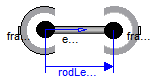
Joint that has a spherical joint on each of its two ends. The rod connecting the two spherical joints is approximated by a point mass that is located in the middle of the rod. When the mass is set to zero (default), special code for a massless body is generated. In the following default animation figure, the two spherical joints are represented by two red spheres, the connecting rod by a grey cylinder and the point mass in the middle of the rod by a light blue sphere:
This joint introduces one constraint defining that the distance between the origin of frame_a and the origin of frame_b is constant (= rodLength). It is highly recommended to use this joint in loops whenever possible, because this enhances the efficiency considerably due to smaller systems of non-linear algebraic equations.
It is sometimes desirable to compute the rodLength of the connecting rod during initialization. For this, parameter computeLength has to be set to true and instead one other, easier to determine, position variable in the same loop needs to have a fixed attribute of true. For example, if a loop consists of one Revolute joint, one Prismatic joint and a SphericalSpherical joint, one may fix the start values of the revolute joint angle and of the relative distance of the prismatic joint in order to compute the rodLength of the rod.
It is not possible to connect other components, such as a body with mass properties or a special visual shape object to the rod connecting the two spherical joints. If this is needed, use instead joint Joints.UniversalSpherical that has this property.
Extends from Interfaces.PartialTwoFrames (Base model for components providing two frame connectors + outer world + assert to guarantee that the component is connected).
| Type | Name | Default | Description |
|---|---|---|---|
| Boolean | animation | true | = true, if animation shall be enabled |
| Boolean | showMass | true | = true, if mass shall be shown (provided animation = true and m > 0) |
| Boolean | computeRodLength | false | = true, if rodLength shall be computed during initialization (see info) |
| Length | rodLength | Distance between the origins of frame_a and frame_b (if computeRodLength=true, guess value) [m] | |
| Mass | m | 0 | Mass of rod (= point mass located in middle of rod) [kg] |
| Animation | |||
| if animation = true | |||
| Diameter | sphereDiameter | world.defaultJointLength | Diameter of spheres respresenting the spherical joints [m] |
| Color | sphereColor | Modelica.Mechanics.MultiBody... | Color of spheres respresenting the spherical joints |
| Diameter | rodDiameter | sphereDiameter/Types.Default... | Diameter of rod connecting the two spherical joint [m] |
| Color | rodColor | Modelica.Mechanics.MultiBody... | Color of rod connecting the two spherical joints |
| SpecularCoefficient | specularCoefficient | world.defaultSpecularCoeffic... | Reflection of ambient light (= 0: light is completely absorbed) |
| if animation = true and showMass = true and m > 0 | |||
| Diameter | massDiameter | sphereDiameter | Diameter of sphere representing the mass point [m] |
| Color | massColor | Modelica.Mechanics.MultiBody... | Color of sphere representing the mass point |
| Advanced | |||
| Boolean | kinematicConstraint | true | = false, if no constraint shall be defined, due to analytically solving a kinematic loop ("false" should not be used by user, but only by MultiBody.Joints.Assemblies joints) |
| Real | constraintResidue | rRod_0*rRod_0 - rodLength*ro... | Constraint equation of joint in residue form: Either length constraint (= default) or equation to compute rod force (for analytic solution of loops in combination with Internal.RevoluteWithLengthConstraint/PrismaticWithLengthConstraint) |
| Boolean | checkTotalPower | false | = true, if total power flowing into this component shall be determined (must be zero) |
| Type | Name | Description |
|---|---|---|
| Frame_a | frame_a | Coordinate system fixed to the component with one cut-force and cut-torque |
| Frame_b | frame_b | Coordinate system fixed to the component with one cut-force and cut-torque |
model SphericalSpherical
"Spherical - spherical joint aggregation (1 constraint, no potential states) with an optional point mass in the middle"
import SI = Modelica.SIunits;
import Modelica.Mechanics.MultiBody.Types;
extends Interfaces.PartialTwoFrames;
parameter Boolean animation=true "= true, if animation shall be enabled";
parameter Boolean showMass=true
"= true, if mass shall be shown (provided animation = true and m > 0)";
parameter Boolean computeRodLength=false
"= true, if rodLength shall be computed during initialization (see info)";
parameter SI.Length rodLength(
min=Modelica.Constants.eps,
fixed=not computeRodLength, start = 1)
"Distance between the origins of frame_a and frame_b (if computeRodLength=true, guess value)";
parameter SI.Mass m(min=0)=0
"Mass of rod (= point mass located in middle of rod)";
parameter SI.Diameter sphereDiameter=world.defaultJointLength
"Diameter of spheres respresenting the spherical joints";
input Types.Color sphereColor=Modelica.Mechanics.MultiBody.Types.Defaults.JointColor
"Color of spheres respresenting the spherical joints";
parameter SI.Diameter rodDiameter=sphereDiameter/Types.Defaults.JointRodDiameterFraction
"Diameter of rod connecting the two spherical joint";
input Types.Color rodColor=Modelica.Mechanics.MultiBody.Types.Defaults.RodColor
"Color of rod connecting the two spherical joints";
parameter SI.Diameter massDiameter=sphereDiameter
"Diameter of sphere representing the mass point";
input Types.Color massColor=Modelica.Mechanics.MultiBody.Types.Defaults.BodyColor
"Color of sphere representing the mass point";
input Types.SpecularCoefficient specularCoefficient = world.defaultSpecularCoefficient
"Reflection of ambient light (= 0: light is completely absorbed)";
parameter Boolean kinematicConstraint=true
"= false, if no constraint shall be defined, due to analytically solving a kinematic loop (\"false\" should not be used by user, but only by MultiBody.Joints.Assemblies joints)";
Real constraintResidue = rRod_0*rRod_0 - rodLength*rodLength
"Constraint equation of joint in residue form: Either length constraint (= default) or equation to compute rod force (for analytic solution of loops in combination with Internal.RevoluteWithLengthConstraint/PrismaticWithLengthConstraint)";
parameter Boolean checkTotalPower=false
"= true, if total power flowing into this component shall be determined (must be zero)";
SI.Force f_rod
"Constraint force in direction of the rod (positive on frame_a, when directed from frame_a to frame_b)";
SI.Position rRod_0[3]
"Position vector from frame_a to frame_b resolved in world frame";
SI.Position rRod_a[3]
"Position vector from frame_a to frame_b resolved in frame_a";
Real eRod_a[3](each final unit="1")
"Unit vector in direction from frame_a to frame_b, resolved in frame_a";
SI.Position r_CM_0[3]
"Dummy if m==0, or position vector from world frame to mid-point of rod, resolved in world frame";
SI.Velocity v_CM_0[3] "First derivative of r_CM_0";
SI.Force f_CM_a[3]
"Dummy if m==0, or inertial force acting at mid-point of rod due to mass oint acceleration, resolved in frame_a";
SI.Force f_CM_e[3]
"Dummy if m==0, or projection of f_CM_a onto eRod_a, resolved in frame_a";
SI.Force f_b_a1[3]
"Force acting at frame_b, but without force in rod, resolved in frame_a";
SI.Power totalPower
"Total power flowing into this element, if checkTotalPower=true (otherwise dummy)";
protected
Visualizers.Advanced.Shape shape_rod(
shapeType="cylinder",
color=rodColor,
specularCoefficient=specularCoefficient,
length=rodLength,
width=rodDiameter,
height=rodDiameter,
lengthDirection=eRod_a,
widthDirection={0,1,0},
r=frame_a.r_0,
R=frame_a.R) if world.enableAnimation and animation;
Visualizers.Advanced.Shape shape_a(
shapeType="sphere",
color=sphereColor,
specularCoefficient=specularCoefficient,
length=sphereDiameter,
width=sphereDiameter,
height=sphereDiameter,
lengthDirection=eRod_a,
widthDirection={0,1,0},
r_shape=-eRod_a*(sphereDiameter/2),
r=frame_a.r_0,
R=frame_a.R) if world.enableAnimation and animation;
Visualizers.Advanced.Shape shape_b(
shapeType="sphere",
color=sphereColor,
specularCoefficient=specularCoefficient,
length=sphereDiameter,
width=sphereDiameter,
height=sphereDiameter,
lengthDirection=eRod_a,
widthDirection={0,1,0},
r_shape=eRod_a*(rodLength - sphereDiameter/2),
r=frame_a.r_0,
R=frame_a.R) if world.enableAnimation and animation;
Visualizers.Advanced.Shape shape_mass(
shapeType="sphere",
color=massColor,
specularCoefficient=specularCoefficient,
length=massDiameter,
width=massDiameter,
height=massDiameter,
lengthDirection=eRod_a,
widthDirection={0,1,0},
r_shape=eRod_a*(rodLength/2 - sphereDiameter/2),
r=frame_a.r_0,
R=frame_a.R) if world.enableAnimation and animation and showMass and m > 0;
equation
// Determine relative position vector between the two frames
if kinematicConstraint then
rRod_0 = transpose(frame_b.R.T)*(frame_b.R.T*frame_b.r_0) - transpose(
frame_a.R.T)*(frame_a.R.T*frame_a.r_0);
else
rRod_0 = frame_b.r_0 - frame_a.r_0;
end if;
//rRod_0 = frame_b.r_0 - frame_a.r_0;
rRod_a = Frames.resolve2(frame_a.R, rRod_0);
eRod_a = rRod_a/rodLength;
// Constraint equation
constraintResidue = 0;
// Cut-torques at frame_a and frame_b
frame_a.t = zeros(3);
frame_b.t = zeros(3);
/* Force and torque balance of rod
- Kinematics for center of mass CM of mass point
r_CM_0 = frame_a.r_0 + rRod_0/2;
v_CM_0 = der(r_CM_0);
a_CM_a = resolve2(frame_a.R, der(v_CM_0) - world.gravityAcceleration(r_CM_0));
- Inertial and gravity force in direction (f_CM_e) and orthogonal (f_CM_n) to rod
f_CM_a = m*a_CM_a
f_CM_e = f_CM_a*eRod_a; // in direction of rod
f_CM_n = rodLength(f_CM_a - f_CM_e); // orthogonal to rod
- Force balance in direction of rod
f_CM_e = fa_rod_e + fb_rod_e;
- Force balance orthogonal to rod
f_CM_n = fa_rod_n + fb_rod_n;
- Torque balance with respect to frame_a
0 = (-f_CM_n)*rodLength/2 + fb_rod_n*rodLength
The result is:
fb_rod_n = f_CM_n/2;
fa_rod_n = fb_rod_n;
fb_rod_e = f_CM_e - fa_rod_e;
fa_rod_e is the unknown computed from loop
*/
// f_b_a1 is needed in aggregation joints to solve kinematic loops analytically
if m > 0 then
r_CM_0 = frame_a.r_0 + rRod_0/2;
v_CM_0 = der(r_CM_0);
f_CM_a = m*Frames.resolve2(frame_a.R, der(v_CM_0) -
world.gravityAcceleration(r_CM_0));
f_CM_e = (f_CM_a*eRod_a)*eRod_a;
frame_a.f = (f_CM_a - f_CM_e)/2 + f_rod*eRod_a;
f_b_a1 = (f_CM_a + f_CM_e)/2;
frame_b.f = Frames.resolveRelative(f_b_a1 - f_rod*eRod_a, frame_a.R,
frame_b.R);
else
r_CM_0 = zeros(3);
v_CM_0 = zeros(3);
f_CM_a = zeros(3);
f_CM_e = zeros(3);
f_b_a1 = zeros(3);
frame_a.f = f_rod*eRod_a;
frame_b.f = -Frames.resolveRelative(frame_a.f, frame_a.R, frame_b.R);
end if;
if checkTotalPower then
totalPower = frame_a.f*Frames.resolve2(frame_a.R, der(frame_a.r_0)) +
frame_b.f*Frames.resolve2(frame_b.R, der(frame_b.r_0)) + (-m)*(der(
v_CM_0) - world.gravityAcceleration(r_CM_0))*v_CM_0 + frame_a.t*
Frames.angularVelocity2(frame_a.R) + frame_b.t*Frames.angularVelocity2(
frame_b.R);
else
totalPower = 0;
end if;
end SphericalSpherical;
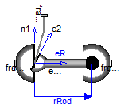
This component consists of a universal joint at frame_a and a spherical joint at frame_b that are connected together with a rigid rod, see default aimation figure (the arrows are not part of the default animation):
This joint aggregation has no mass and no inertia and introduces the constraint that the distance between the origin of frame_a and the origin of frame_b is constant (= Frames.length(rRod_ia)). The universal joint is defined in the following way:
The definition of axis 2 of the universal joint is performed according to the most often occuring case. In a future release, axis 2 might be explicitly definable via a parameter. However, the treatment is much more complicated and the number of operations is considerably higher, if axis 2 is not orthogonal to axis 1 and to the connecting rod.
Note, there is a singularity when axis 1 and the connecting rod are parallel to other. Therefore, if possible n1_a should be selected in such a way that it is perpendicular to rRod_ia in the initial configuration (i.e., the distance to the singularity is as large as possible).
An additional frame_ia is present. It is fixed in the connecting rod at the origin of frame_a. The placement of frame_ia on the rod is implicitly defined by the universal joint (frame_a and frame_ia coincide when the angles of the two revolute joints of the universal joint are zero) and by parameter vector rRod_ia, the position vector from the origin of frame_a to the origin of frame_b, resolved in frame_ia.
The easiest way to define the parameters of this joint is by moving the MultiBody system in a reference configuration where all frames of all components are parallel to other (alternatively, at least frame_a and frame_ia of the UniversalSpherical joint should be parallel to other when defining an instance of this component). Since frame_a and frame_ia are parallel to other, vector rRod_ia from frame_a to frame_b resolved in frame_ia can be resolved in frame_a (or the world frame, if all frames are parallel to other).
This joint aggregation can be used in cases where in reality a rod with spherical joints at end are present. Such a system has an additional degree of freedom to rotate the rod along its axis. In practice this rotation is usually of no interested and is mathematically removed by replacing one of the spherical joints by a universal joint. Still, in most cases the Joints.SphericalSpherical joint aggregation can be used instead of the UniversalSpherical joint since the rod is animated and its mass properties are approximated by a point mass in the middle of the rod. The SphericalSpherical joint has the advantage that it does not have a singular configuration.
In the public interface of the UniversalSpherical joint, the following (final) parameters are provided:
parameter Real rodLength(unit="m") "Length of rod"; parameter Real eRod_ia[3] "Unit vector along rod, resolved in frame_ia"; parameter Real e2_ia [3] "Unit vector along axis 2, resolved in frame_ia";
This allows a more convenient definition of data which is related to the rod. For example, if a box shall be connected at frame_ia directing from the origin of frame_a to the middle of the rod, this might be defined as:
Modelica.Mechanics.MultiBody.Joints.UniversalSpherical jointUS(rRod_ia={1.2, 1, 0.2});
Modelica.Mechanics.MultiBody.Visualizers.FixedShape shape(shapeType = "box",
lengthDirection = jointUS.eRod_ia,
widthDirection = jointUS.e2_ia,
length = jointUS.rodLength/2,
width = jointUS.rodLength/10);
equation
connect(jointUS.frame_ia, shape.frame_a);
Extends from Interfaces.PartialTwoFrames (Base model for components providing two frame connectors + outer world + assert to guarantee that the component is connected).
| Type | Name | Default | Description |
|---|---|---|---|
| Boolean | animation | true | = true, if animation shall be enabled |
| Boolean | showUniversalAxes | true | = true, if universal joint shall be visualized with two cylinders, otherwise with a sphere (provided animation=true) |
| Boolean | computeRodLength | false | = true, if distance between frame_a and frame_b shall be computed during initialization (see info) |
| Axis | n1_a | {0,0,1} | Axis 1 of universal joint resolved in frame_a (axis 2 is orthogonal to axis 1 and to rod) [1] |
| Position | rRod_ia[3] | {1,0,0} | Vector from origin of frame_a to origin of frame_b, resolved in frame_ia (if computeRodLength=true, rRod_ia is only an axis vector along the connecting rod) [m] |
| Animation | |||
| if animation = true | |||
| Diameter | sphereDiameter | world.defaultJointLength | Diameter of spheres representing the universal and the spherical joint [m] |
| Color | sphereColor | Modelica.Mechanics.MultiBody... | Color of spheres representing the universal and the spherical joint |
| ShapeType | rodShapeType | "cylinder" | Shape type of rod connecting the universal and the spherical joint |
| Distance | rodWidth | sphereDiameter/Types.Default... | Width of rod shape in direction of axis 2 of universal joint. [m] |
| Distance | rodHeight | rodWidth | Height of rod shape in direction that is orthogonal to rod and to axis 2 [m] |
| ShapeExtra | rodExtra | 0.0 | Additional parameter depending on rodShapeType |
| Color | rodColor | Modelica.Mechanics.MultiBody... | Color of rod shape connecting the universal and the spherical joints |
| SpecularCoefficient | specularCoefficient | world.defaultSpecularCoeffic... | Reflection of ambient light (= 0: light is completely absorbed) |
| if animation = true and showUniversalAxes | |||
| Distance | cylinderLength | world.defaultJointLength | Length of cylinders representing the two universal joint axes [m] |
| Distance | cylinderDiameter | world.defaultJointWidth | Diameter of cylinders representing the two universal joint axes [m] |
| Color | cylinderColor | Modelica.Mechanics.MultiBody... | Color of cylinders representing the two universal joint axes |
| Advanced | |||
| Boolean | kinematicConstraint | true | = false, if no constraint shall be defined, due to analytically solving a kinematic loop |
| Real | constraintResidue | rRod_0*rRod_0 - rodLength*ro... | Constraint equation of joint in residue form: Either length constraint (= default) or equation to compute rod force (for analytic solution of loops in combination with Internal.RevoluteWithLengthConstraint/PrismaticWithLengthConstraint) |
| Boolean | checkTotalPower | false | = true, if total power flowing into this component shall be determined (must be zero) |
| Type | Name | Description |
|---|---|---|
| Frame_a | frame_a | Coordinate system fixed to the component with one cut-force and cut-torque |
| Frame_b | frame_b | Coordinate system fixed to the component with one cut-force and cut-torque |
| Frame_a | frame_ia | Coordinate system at the origin of frame_a, fixed at the rod connecting the universal with the spherical joint |
model UniversalSpherical "Universal - spherical joint aggregation (1 constraint, no potential states)" import SI = Modelica.SIunits; import Modelica.Mechanics.MultiBody.Types; extends Interfaces.PartialTwoFrames;Interfaces.Frame_a frame_ia "Coordinate system at the origin of frame_a, fixed at the rod connecting the universal with the spherical joint"; parameter Boolean animation=true "= true, if animation shall be enabled"; parameter Boolean showUniversalAxes=true " = true, if universal joint shall be visualized with two cylinders, otherwise with a sphere (provided animation=true)"; parameter Boolean computeRodLength=false "= true, if distance between frame_a and frame_b shall be computed during initialization (see info)"; parameter Modelica.Mechanics.MultiBody.Types.Axis n1_a={0,0,1} "Axis 1 of universal joint resolved in frame_a (axis 2 is orthogonal to axis 1 and to rod)"; parameter SI.Position rRod_ia[3]={1,0,0} "Vector from origin of frame_a to origin of frame_b, resolved in frame_ia (if computeRodLength=true, rRod_ia is only an axis vector along the connecting rod)"; parameter SI.Diameter sphereDiameter=world.defaultJointLength "Diameter of spheres representing the universal and the spherical joint"; input Types.Color sphereColor=Modelica.Mechanics.MultiBody.Types.Defaults.JointColor "Color of spheres representing the universal and the spherical joint"; parameter Types.ShapeType rodShapeType="cylinder" "Shape type of rod connecting the universal and the spherical joint"; parameter SI.Distance rodWidth=sphereDiameter/Types.Defaults.JointRodDiameterFraction "Width of rod shape in direction of axis 2 of universal joint."; parameter SI.Distance rodHeight=rodWidth "Height of rod shape in direction that is orthogonal to rod and to axis 2"; parameter Types.ShapeExtra rodExtra=0.0 "Additional parameter depending on rodShapeType"; input Types.Color rodColor=Modelica.Mechanics.MultiBody.Types.Defaults.RodColor "Color of rod shape connecting the universal and the spherical joints"; parameter SI.Distance cylinderLength=world.defaultJointLength "Length of cylinders representing the two universal joint axes"; parameter SI.Distance cylinderDiameter=world.defaultJointWidth "Diameter of cylinders representing the two universal joint axes"; input Types.Color cylinderColor=Modelica.Mechanics.MultiBody.Types.Defaults.JointColor "Color of cylinders representing the two universal joint axes"; input Types.SpecularCoefficient specularCoefficient = world.defaultSpecularCoefficient "Reflection of ambient light (= 0: light is completely absorbed)"; parameter Boolean kinematicConstraint=true "= false, if no constraint shall be defined, due to analytically solving a kinematic loop"; Real constraintResidue = rRod_0*rRod_0 - rodLength*rodLength "Constraint equation of joint in residue form: Either length constraint (= default) or equation to compute rod force (for analytic solution of loops in combination with Internal.RevoluteWithLengthConstraint/PrismaticWithLengthConstraint)"; parameter Boolean checkTotalPower=false "= true, if total power flowing into this component shall be determined (must be zero)"; SI.Force f_rod "Constraint force in direction of the rod (positive, if rod is pressed)"; final parameter SI.Distance rodLength(fixed=not computeRodLength)= Modelica.Math.Vectors.length( rRod_ia) "Length of rod (distance between origin of frame_a and origin of frame_b)"; final parameter Real eRod_ia[3](each final unit="1")=Modelica.Math.Vectors.normalize( rRod_ia,0.0) "Unit vector from origin of frame_a to origin of frame_b, resolved in frame_ia"; final parameter Real e2_ia[3](each final unit="1")=Modelica.Math.Vectors.normalize( cross(n1_a, eRod_ia)) "Unit vector in direction of axis 2 of universal joint, resolved in frame_ia (orthogonal to n1_a and eRod_ia; note: frame_ia is parallel to frame_a when the universal joint angles are zero)"; final parameter Real e3_ia[3](each final unit="1")=cross(eRod_ia, e2_ia) "Unit vector perpendicular to eRod_ia and e2_ia, resolved in frame_ia"; SI.Power totalPower "Total power flowing into this element, if checkTotalPower=true (otherwise dummy)"; SI.Force f_b_a1[3] "frame_b.f without f_rod part, resolved in frame_a (needed for analytic loop handling)"; Real eRod_a[3](each final unit="1") "Unit vector in direction of rRod_a, resolved in frame_a (needed for analytic loop handling)"; SI.Position rRod_0[3](start=rRod_ia) "Position vector from origin of frame_a to origin of frame_b resolved in world frame"; SI.Position rRod_a[3](start=rRod_ia) "Position vector from origin of frame_a to origin of frame_b resolved in frame_a"; protected SI.Force f_b_a[3] "frame_b.f resolved in frame_a"; SI.Force f_ia_a[3] "frame_ia.f resolved in frame_a"; SI.Torque t_ia_a[3] "frame_ia.t resolved in frame_a"; Real n2_a[3](each final unit="1") "Vector in direction of axis 2 of the universal joint (e2_ia), resolved in frame_a"; Real length2_n2_a(start=1, unit="m2") "Square of length of vector n2_a"; SI.Length length_n2_a "Length of vector n2_a"; Real e2_a[3](each final unit="1") "Unit vector in direction of axis 2 of the universal joint (e2_ia), resolved in frame_a"; Real e3_a[3](each final unit="1") "Unit vector perpendicular to eRod_ia and e2_a, resolved in frame_a"; Real der_rRod_a_L[3](each unit="1/s") "= der(rRod_a)/rodLength"; SI.AngularVelocity w_rel_ia1[3]; Frames.Orientation R_rel_ia1; Frames.Orientation R_rel_ia2; // Real T_rel_ia[3, 3]; Frames.Orientation R_rel_ia "Rotation from frame_a to frame_ia"; Visualizers.Advanced.Shape rodShape( shapeType=rodShapeType, color=rodColor, specularCoefficient=specularCoefficient, length=rodLength, width=rodWidth, height=rodHeight, lengthDirection=eRod_ia, widthDirection=e2_ia, r=frame_ia.r_0, R=frame_ia.R) if world.enableAnimation and animation; Visualizers.Advanced.Shape sphericalShape_b( shapeType="sphere", color=sphereColor, specularCoefficient=specularCoefficient, length=sphereDiameter, width=sphereDiameter, height=sphereDiameter, lengthDirection={1,0,0}, widthDirection={0,1,0}, r_shape={-0.5,0,0}*sphereDiameter, r=frame_b.r_0, R=frame_b.R) if world.enableAnimation and animation; Visualizers.Advanced.Shape sphericalShape_a( shapeType="sphere", color=sphereColor, specularCoefficient=specularCoefficient, length=sphereDiameter, width=sphereDiameter, height=sphereDiameter, lengthDirection={1,0,0}, widthDirection={0,1,0}, r_shape={-0.5,0,0}*sphereDiameter, r=frame_a.r_0, R=frame_a.R) if world.enableAnimation and animation and not showUniversalAxes; Visualizers.Advanced.Shape universalShape1( shapeType="cylinder", color=cylinderColor, specularCoefficient=specularCoefficient, length=cylinderLength, width=cylinderDiameter, height=cylinderDiameter, lengthDirection=n1_a, widthDirection={0,1,0}, r_shape=-n1_a*(cylinderLength/2), r=frame_a.r_0, R=frame_a.R) if world.enableAnimation and animation and showUniversalAxes; Visualizers.Advanced.Shape universalShape2( shapeType="cylinder", color=cylinderColor, specularCoefficient=specularCoefficient, length=cylinderLength, width=cylinderDiameter, height=cylinderDiameter, lengthDirection=e2_ia, widthDirection={0,1,0}, r_shape=-e2_ia*(cylinderLength/2), r=frame_ia.r_0, R=frame_ia.R) if world.enableAnimation and animation and showUniversalAxes; equation Connections.branch(frame_a.R, frame_ia.R); if kinematicConstraint then rRod_0 = transpose(frame_b.R.T)*(frame_b.R.T*frame_b.r_0) - transpose( frame_a.R.T)*(frame_a.R.T*frame_a.r_0); else rRod_0 = frame_b.r_0 - frame_a.r_0; end if; //rRod_0 = frame_b.r_0 - frame_a.r_0; rRod_a = Frames.resolve2(frame_a.R, rRod_0); // Constraint equation constraintResidue = 0; /* Determine relative Rotation R_rel_ia from frame_a to frame_ia and absolute rotation of frame_a.R. */ eRod_a = rRod_a/rodLength; n2_a = cross(n1_a, eRod_a); length2_n2_a = n2_a*n2_a; assert(length2_n2_a > 1.e-10, " A Modelica.Mechanics.MultiBody.Joints.UniversalSpherical joint (consisting of a universal joint and a spherical joint connected together by a rigid rod) is in the singular configuration of the universal joint. This means that axis 1 of the universal joint defined via parameter \"n1_a\" is parallel to vector \"rRod_ia\" that is directed from the origin of frame_a to the origin of frame_b. You may try to use another \"n1_a\" vector. If this fails, use instead Modelica.Mechanics.MultiBody.Joints.SphericalSpherical, if this is possible, because this joint aggregation does not have a singular configuration. "); length_n2_a = sqrt(length2_n2_a); e2_a = n2_a/length_n2_a; e3_a = cross(eRod_a, e2_a); /* The statements below are an efficient implementation of the original equations: T_rel_ia = [eRod_ia, e2_ia, e3_ia]*transpose([eRod_a, e2_a, e3_a]); R_rel_ia = Frames.from_T(T_rel_ia, Frames.TransformationMatrices.angularVelocity2(T_rel_ia, der(T_rel_ia))); To perform this, the rotation is split into two parts: R_rel_ia : Rotation object from frame_a to frame_ia R_rel_ia1: Rotation object from frame_a to frame_ia1 (frame that is fixed in frame_ia such that x-axis is along the rod axis) T = transpose([eRod_a, e2_a, e3_a]; w = w_rel_ia1 R_rel_ia2: Fixed rotation object from frame_ia1 to frame_ia T = [eRod_ia, e2_ia, e3_ia]; w = zeros(3) The difficult part is to compute w_rel_ia1: w_rel_ia1 = [ e3_a*der(e2_a); -e3_a*der(eRod_a); e2_a*der(eRod_a)] der(eRod_a) is directly given, since eRod_a is a function of translational quantities only. der(eRod_a) = (der(rRod_a) - eRod_a*(eRod_a*der(rRod_a)))/rodLength der(n2_a) = cross(n1_a, der(eRod_a)) der(e2_a) = (der(n2_a) - e2_a*(e2_a*der(n2_a)))/length_n2_a Inserting these equations in w_rel_ia1 results in: e3_a*der(eRod_a) = e3_a*der(rRod_a)/rodLength // e3_a*eRod_a = 0 e2_a*der(eRod_a) = e2_a*der(rRod_a)/rodLength // e2_a*eRod_a = 0 e3_a*der(e2_a) = e3_a*der(n2_a)/lenght_n2_a // e3_a*e2_a = 0 = e3_a*cross(n1_a, der(eRod_a))/length_n2_a = e3_a*cross(n1_a, der(rRod_a) - eRod_a*(eRod_a*der(rRod_a)))/(length_n2_a*rodLength) = e3_a*cross(n1_a, der(rRod_a))/(length_n2_a*rodLength) Furthermore, we have: rRod_a = resolve2(frame_a.R, rRod_0); der(rRod_a) = resolve2(frame_a.R, der(rRod_0)) - cross(frame_a.R.w, rRod_a)); */ der_rRod_a_L = (Frames.resolve2(frame_a.R, der(rRod_0)) - cross(frame_a.R.w, rRod_a))/rodLength; w_rel_ia1 = {e3_a*cross(n1_a, der_rRod_a_L)/length_n2_a,-e3_a*der_rRod_a_L, e2_a*der_rRod_a_L}; R_rel_ia1 = Frames.from_T(transpose([eRod_a, e2_a, e3_a]), w_rel_ia1); R_rel_ia2 = Frames.from_T([eRod_ia, e2_ia, e3_ia], zeros(3)); R_rel_ia = Frames.absoluteRotation(R_rel_ia1, R_rel_ia2); /* T_rel_ia = [eRod_ia, e2_ia, e3_ia]*transpose([eRod_a, e2_a, e3_a]); R_rel_ia = Frames.from_T(T_rel_ia, Frames.TransformationMatrices.angularVelocity2(T_rel_ia, der(T_rel_ia))); */ // Compute kinematic quantities of frame_ia frame_ia.r_0 = frame_a.r_0; frame_ia.R = Frames.absoluteRotation(frame_a.R, R_rel_ia); /* In the following formulas f_a, f_b, f_ia, t_a, t_b, t_ia are the forces and torques at frame_a, frame_b, frame_ia, respectively, resolved in frame_a. e_x, e_y, e_z are the unit vectors resolved in frame_a. Torque balance at the rod around the origin of frame_a: 0 = t_a + t_ia + cross(rRod_a, f_b) with rRod_a = rodLength*e_x f_b = -f_rod*e_x + f_b[2]*e_y + f_b[3]*e_z follows: 0 = t_a + t_ia + rodLength*(f_b[2]*e_z - f_b[3]*e_y) The projection of t_a with respect to universal joint axes vanishes: n1_a*t_a = 0 e_y*t_a = 0 Therefore: 0 = n1_a*t_ia + rodLength*f_b[2]*(n1_a*e_z) 0 = e_y*t_ia - rodLength*f_b[3] or f_b = -f_rod*e_x - e_y*(n1_a*t_ia)/(rodLength*(n1_a*e_z)) + e_z*(e_y*t_ia)/rodLength Force balance: 0 = f_a + f_b + f_ia */ f_ia_a = Frames.resolve1(R_rel_ia, frame_ia.f); t_ia_a = Frames.resolve1(R_rel_ia, frame_ia.t); // f_b_a1 is needed in aggregation joints to solve kinematic loops analytically f_b_a1 = -e2_a*((n1_a*t_ia_a)/(rodLength*(n1_a*e3_a))) + e3_a*((e2_a*t_ia_a) /rodLength); f_b_a = -f_rod*eRod_a + f_b_a1; frame_b.f = Frames.resolveRelative(f_b_a, frame_a.R, frame_b.R); frame_b.t = zeros(3); zeros(3) = frame_a.f + f_b_a + f_ia_a; zeros(3) = frame_a.t + t_ia_a + cross(rRod_a, f_b_a); // Measure power for test purposes if checkTotalPower then totalPower = frame_a.f*Frames.resolve2(frame_a.R, der(frame_a.r_0)) + frame_b.f*Frames.resolve2(frame_b.R, der(frame_b.r_0)) + frame_ia.f* Frames.resolve2(frame_ia.R, der(frame_ia.r_0)) + frame_a.t* Frames.angularVelocity2(frame_a.R) + frame_b.t*Frames.angularVelocity2( frame_b.R) + frame_ia.t*Frames.angularVelocity2(frame_ia.R); else totalPower = 0; end if;end UniversalSpherical;
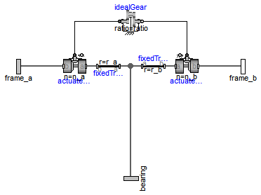
This ideal massless joint provides a gear constraint between
frames frame_a and frame_b. The axes of rotation
of frame_a and frame_b may be arbitrary.
Reference
Schweiger, Christian ;
Otter, Martin:
Modelling
3D Mechanical Effects of 1-dim. Powertrains. In: Proceedings of the 3rd International
Modelica Conference. Linköping : The Modelica Association and Linköping University,
November 3-4, 2003, pp. 149-158
Extends from Modelica.Mechanics.MultiBody.Interfaces.PartialTwoFrames (Base model for components providing two frame connectors + outer world + assert to guarantee that the component is connected).
| Type | Name | Default | Description |
|---|---|---|---|
| Real | ratio | Gear speed ratio | |
| Axis | n_a | {1,0,0} | Axis of rotation of shaft a (same coordinates in frame_a, frame_b, bearing) [1] |
| Axis | n_b | {1,0,0} | Axis of rotation of shaft b (same coordinates in frame_a, frame_b, bearing) [1] |
| Position | r_a[3] | {0,0,0} | Vector from frame bearing to frame_a resolved in bearing [m] |
| Position | r_b[3] | {0,0,0} | Vector from frame bearing to frame_b resolved in bearing [m] |
| Type | Name | Description |
|---|---|---|
| Frame_a | frame_a | Coordinate system fixed to the component with one cut-force and cut-torque |
| Frame_b | frame_b | Coordinate system fixed to the component with one cut-force and cut-torque |
| Frame_a | bearing | Coordinate system fixed in the bearing |
model GearConstraint "Ideal 3-dim. gearbox (arbitrary shaft directions)" extends Modelica.Mechanics.MultiBody.Interfaces.PartialTwoFrames;Interfaces.Frame_a bearing "Coordinate system fixed in the bearing"; parameter Real ratio(start=2) "Gear speed ratio"; parameter Modelica.Mechanics.MultiBody.Types.Axis n_a={1,0,0} "Axis of rotation of shaft a (same coordinates in frame_a, frame_b, bearing)"; parameter Modelica.Mechanics.MultiBody.Types.Axis n_b={1,0,0} "Axis of rotation of shaft b (same coordinates in frame_a, frame_b, bearing)"; parameter Modelica.SIunits.Position r_a[3]={0,0,0} "Vector from frame bearing to frame_a resolved in bearing"; parameter Modelica.SIunits.Position r_b[3]={0,0,0} "Vector from frame bearing to frame_b resolved in bearing";Modelica.Mechanics.MultiBody.Joints.Revolute actuatedRevolute_a(useAxisFlange=true, n=n_a, animation=false); Modelica.Mechanics.MultiBody.Joints.Revolute actuatedRevolute_b(useAxisFlange=true,n=n_b, animation=false); Modelica.Mechanics.Rotational.Components.IdealGear idealGear( ratio=ratio); Modelica.Mechanics.MultiBody.Parts.FixedTranslation fixedTranslation1(animation=false, r=r_b); Modelica.Mechanics.MultiBody.Parts.FixedTranslation fixedTranslation2(animation=false, r=r_a); equation assert(cardinality(bearing) > 0, "Connector bearing of component is not connected");connect(actuatedRevolute_a.axis, idealGear.flange_a); connect(idealGear.flange_b, actuatedRevolute_b.axis); connect(actuatedRevolute_a.frame_a,fixedTranslation2. frame_b); connect(fixedTranslation2.frame_a, bearing); connect(fixedTranslation1.frame_a, bearing); connect(fixedTranslation1.frame_b, actuatedRevolute_b.frame_a); connect(frame_a, actuatedRevolute_a.frame_b); connect(actuatedRevolute_b.frame_b, frame_b); end GearConstraint;

| Type | Name | Default | Description |
|---|---|---|---|
| Radius | wheelRadius | Wheel radius [m] | |
| StateSelect | stateSelect | StateSelect.always | Priority to use generalized coordinates as states |
| Initialization | |||
| Angle | angles.start[3] | {0,0,0} | Angles to rotate world-frame in to frame_a around z-, y-, x-axis [rad] |
| AngularVelocity | der_angles.start[3] | {0,0,0} | Derivative of angles [rad/s] |
| Type | Name | Description |
|---|---|---|
| Frame_a | frame_a | Frame fixed in wheel center point. x-Axis: upwards, y-axis: along wheel axis |
model RollingWheel "Joint (no mass, no inertia) that describes an ideal rolling wheel (rolling on the plane z=0)" import SI = Modelica.SIunits; import Modelica.Mechanics.MultiBody.Frames;Modelica.Mechanics.MultiBody.Interfaces.Frame_a frame_a "Frame fixed in wheel center point. x-Axis: upwards, y-axis: along wheel axis"; parameter SI.Radius wheelRadius "Wheel radius"; parameter StateSelect stateSelect=StateSelect.always "Priority to use generalized coordinates as states"; SI.Position x(start=0, stateSelect=stateSelect) "x-coordinate of wheel axis"; SI.Position y(start=0, stateSelect=stateSelect) "y-coordinate of wheel axis"; SI.Position z; SI.Angle angles[3](start={0,0,0}, each stateSelect=stateSelect) "Angles to rotate world-frame in to frame_a around z-, y-, x-axis"; SI.AngularVelocity der_angles[3](start={0,0,0}, each stateSelect=stateSelect) "Derivative of angles"; SI.Position r_road_0[3] "Position vector from world frame to contact point on road, resolved in world frame"; // Contact force SI.Force f_wheel_0[3] "Contact force acting on wheel, resolved in world frame"; SI.Force f_n "Contact force acting on wheel in normal direction"; SI.Force f_lat "Contact force acting on wheel in lateral direction"; SI.Force f_long "Contact force acting on wheel in longitudinal direction"; SI.Position err "|r_road_0 - frame_a.r_0| - wheelRadius (must be zero; used for checking)"; protected Real e_axis_0[3] "Unit vector along wheel axis, resolved in world frame"; SI.Position delta_0[3](start={0,0,-wheelRadius}) "Distance vector from wheel center to contact point"; // Coordinate system at contact point Real e_n_0[3] "Unit vector in normal direction of road at contact point, resolved in world frame"; Real e_lat_0[3] "Unit vector in lateral direction of wheel at contact point, resolved in world frame"; Real e_long_0[3] "Unit vector in longitudinal direction of wheel at contact point, resolved in world frame"; // Road description SI.Position s "Road surface parameter 1"; SI.Position w "Road surface parameter 2"; Real e_s_0[3] "Road heading at (s,w), resolved in world frame (unit vector)"; // Slip velocities SI.Velocity v_0[3] "Velocity of wheel center, resolved in world frame"; SI.AngularVelocity w_0[3] "Angular velocity of wheel, resolved in world frame"; SI.Velocity vContact_0[3] "Velocity of wheel contact point, resolved in world frame"; // Utility vectors Real aux[3]; equation // frame_a.R is computed from generalized coordinates Connections.root(frame_a.R); frame_a.r_0 = {x,y,z}; der_angles = der(angles); frame_a.R = Frames.axesRotations({3,2,1}, angles, der_angles); // Road description r_road_0 = {s,w,0}; e_n_0 = {0,0,1}; e_s_0 = {1,0,0}; // Coordinate system at contact point (e_long_0, e_lat_0, e_n_0) e_axis_0 = Frames.resolve1(frame_a.R, {0,1,0}); aux = cross(e_n_0, e_axis_0); e_long_0 = aux / Modelica.Math.Vectors.length(aux); e_lat_0 = cross(e_long_0, e_n_0); // Determine point on road where the wheel is in contact with the road delta_0 = r_road_0 - frame_a.r_0; 0 = delta_0*e_axis_0; 0 = delta_0*e_long_0; // One holonomic positional constraint equation (no penetration in to the ground) 0 = wheelRadius - delta_0*cross(e_long_0, e_axis_0); // only for testing err = Modelica.Math.Vectors.length(delta_0) - wheelRadius; // Slip velocities v_0 = der(frame_a.r_0); w_0 = Frames.angularVelocity1(frame_a.R); vContact_0 = v_0 + cross(w_0, delta_0); // Two non-holonomic constraint equations on velocity level (ideal rolling, no slippage) 0 = vContact_0*e_long_0; 0 = vContact_0*e_lat_0; // Contact force f_wheel_0 = f_n*e_n_0 + f_lat*e_lat_0 + f_long*e_long_0; // Force and torque balance at the wheel center zeros(3) = frame_a.f + Frames.resolve2(frame_a.R, f_wheel_0); zeros(3) = frame_a.t + Frames.resolve2(frame_a.R, cross(delta_0, f_wheel_0)); // Guard against singularity assert(abs(e_n_0*e_axis_0) < 0.99, "Wheel lays nearly on the ground (which is a singularity)");end RollingWheel;
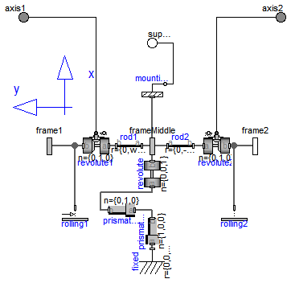
| Type | Name | Default | Description |
|---|---|---|---|
| Boolean | animation | true | = true, if animation of wheel set shall be enabled |
| Radius | wheelRadius | Radius of one wheel [m] | |
| Distance | wheelDistance | Distance between the two wheels [m] | |
| StateSelect | stateSelect | StateSelect.default | Priority to use the generalized coordinates as states |
| Type | Name | Description |
|---|---|---|
| Frame_a | frameMiddle | Frame fixed in middle of axis connecting both wheels (y-axis: along wheel axis, z-Axis: upwards) |
| Frame_a | frame1 | Frame fixed in center point of left wheel (y-axis: along wheel axis, z-Axis: upwards) |
| Frame_b | frame2 | Frame fixed in center point of right wheel (y-axis: along wheel axis, z-Axis: upwards) |
| Flange_a | axis1 | 1-dim. rotational flange that drives the joint |
| Flange_a | axis2 | 1-dim. rotational flange that drives the joint |
| Flange_b | support | Support of 1D axes |
model RollingWheelSet "Joint (no mass, no inertia) that describes an ideal rolling wheel set (two ideal rolling wheels connected together by an axis)" import SI = Modelica.SIunits;Modelica.Mechanics.MultiBody.Interfaces.Frame_a frameMiddle "Frame fixed in middle of axis connecting both wheels (y-axis: along wheel axis, z-Axis: upwards)"; parameter Boolean animation=true "= true, if animation of wheel set shall be enabled"; parameter SI.Radius wheelRadius "Radius of one wheel"; parameter SI.Distance wheelDistance "Distance between the two wheels"; parameter StateSelect stateSelect = StateSelect.default "Priority to use the generalized coordinates as states"; Modelica.SIunits.Position x(start=0, stateSelect=stateSelect) "x coordinate for center between wheels"; Modelica.SIunits.Position y(start=0, stateSelect=stateSelect) "y coordinate for center between wheels"; Modelica.SIunits.Angle phi(start=0, stateSelect=stateSelect) "Orientation angle of wheel axis along z-axis"; Modelica.SIunits.Angle theta1(start=0, stateSelect=stateSelect) "Angle of wheel 1"; Modelica.SIunits.Angle theta2(start=0, stateSelect=stateSelect) "Angle of wheel 2"; Modelica.SIunits.AngularVelocity der_theta1(start=0, stateSelect=stateSelect) "Derivative of theta 1"; Modelica.SIunits.AngularVelocity der_theta2(start=0, stateSelect=stateSelect) "Derivative of theta 2";Modelica.Mechanics.MultiBody.Interfaces.Frame_a frame1 "Frame fixed in center point of left wheel (y-axis: along wheel axis, z-Axis: upwards)"; Modelica.Mechanics.MultiBody.Interfaces.Frame_b frame2 "Frame fixed in center point of right wheel (y-axis: along wheel axis, z-Axis: upwards)"; Modelica.Mechanics.MultiBody.Parts.Fixed fixed( r={0,0, wheelRadius}, animation=animation); Modelica.Mechanics.MultiBody.Parts.FixedTranslation rod1( r={ 0,wheelDistance/2,0}, animation=animation); Modelica.Mechanics.MultiBody.Joints.Prismatic prismatic1(animation= animation); Modelica.Mechanics.MultiBody.Joints.Prismatic prismatic2( n={0,1,0}, animation=animation); Modelica.Mechanics.MultiBody.Joints.Revolute revolute(animation=animation); Modelica.Mechanics.MultiBody.Parts.FixedTranslation rod2( r={ 0,-wheelDistance/2,0}, animation=animation); Modelica.Mechanics.MultiBody.Joints.Revolute revolute1( n={0,1,0}, useAxisFlange=true, animation=animation); Modelica.Mechanics.MultiBody.Joints.Revolute revolute2( n={0,1,0}, useAxisFlange=true, animation=animation); Modelica.Mechanics.MultiBody.Joints.Internal.RollingConstraintVerticalWheel rolling1( radius=wheelRadius); Modelica.Mechanics.MultiBody.Joints.Internal.RollingConstraintVerticalWheel rolling2( radius=wheelRadius, lateralSlidingConstraint=false); Modelica.Mechanics.Rotational.Interfaces.Flange_a axis1 "1-dim. rotational flange that drives the joint"; Modelica.Mechanics.Rotational.Interfaces.Flange_a axis2 "1-dim. rotational flange that drives the joint"; Modelica.Mechanics.MultiBody.Parts.Mounting1D mounting1D; Modelica.Mechanics.Rotational.Interfaces.Flange_b support "Support of 1D axes"; equation prismatic1.s = x; prismatic2.s = y; revolute.phi = phi; revolute1.phi = theta1; revolute2.phi = theta2; der_theta1 = der(theta1); der_theta2 = der(theta2);connect(revolute.frame_b, frameMiddle); connect(rod1.frame_a, frameMiddle); connect(rod2.frame_a, frameMiddle); connect(rod1.frame_b, revolute1.frame_a); connect(revolute1.frame_b, frame1); connect(revolute2.frame_a, rod2.frame_b); connect(revolute2.frame_b, frame2); connect(prismatic1.frame_a, fixed.frame_b); connect(prismatic1.frame_b, prismatic2.frame_a); connect(prismatic2.frame_b, revolute.frame_a); connect(rolling1.frame_a, revolute1.frame_b); connect(rolling2.frame_a, revolute2.frame_b); connect(revolute1.axis, axis1); connect(revolute2.axis, axis2); connect(frameMiddle, mounting1D.frame_a); connect(mounting1D.flange_b, support); end RollingWheelSet;
encapsulated model Model_r
import SI = Modelica.SIunits;
import Modelica.Mechanics.MultiBody.Frames;
input SI.Position r_a_0[3];
input SI.Position r_b_0[3];
input Frames.Orientation R_a;
output SI.Position r_rel_a_1;
output SI.Position r_rel_a_2;
output SI.Position r_rel_a_3;
equation
r_b_0 = r_a_0 + Frames.resolve1(R_a, {r_rel_a_1, r_rel_a_2, r_rel_a_3});
end Model_r;
encapsulated model Model_w
import SI = Modelica.SIunits;
import Modelica.Mechanics.MultiBody.Frames;
input Frames.Orientation R_a;
input Frames.Orientation R_b;
output SI.AngularVelocity w_rel_b_1;
output SI.AngularVelocity w_rel_b_2;
output SI.AngularVelocity w_rel_b_3;
equation
{w_rel_b_1, w_rel_b_2, w_rel_b_3} = Frames.angularVelocity2(R_b)
- Frames.resolve2(R_b,Frames.angularVelocity1(R_a));
end Model_w;